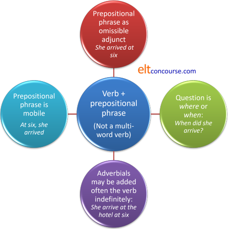
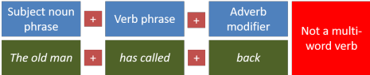
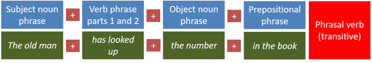
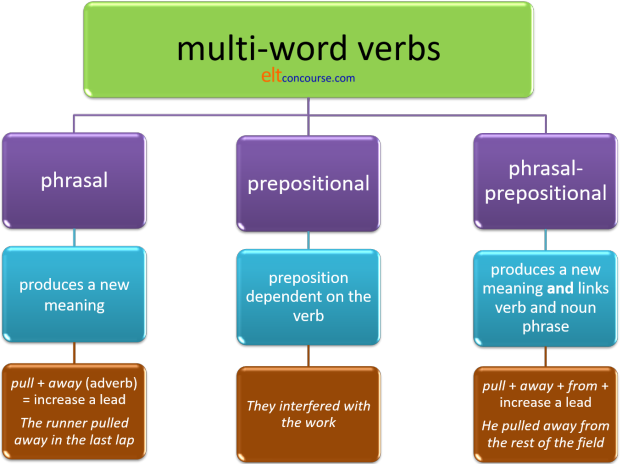
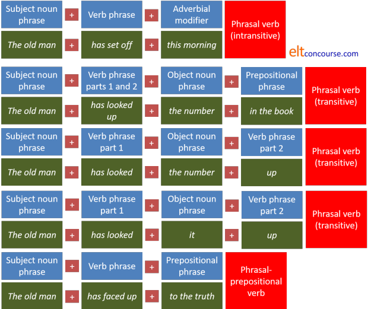

Multi-word verbs (MWVs)
 |
| breaking in |
Note: if this area is fully new to you, you may like to work through the essential guide to MWVs first (new tab).
If you are coming to this guide for the first time, you may want to work through it from top to bottom. It is quite a long guide with a number of sections so, if you are returning for a second or third look, here's an index of the sections.
At the end of each section, you can click on -top- to return to this menu, simply read on, scroll back or bookmark the page for another time.
 |
Definitions and types of analyses |
What follows is one way of analysing
multi-word verbs.
There are other ways to do the analysis which are summarised here.
- One analysis recognises a word class called particles which are neither adverbs
nor prepositions (although they look like them). Particles are
function words, like conjunctions, prepositions etc., which have no
lexical meaning in themselves and need to combine with other words to
make any meaning. For example, on standing alone means
nothing but in a phrase such as get on the bus, it forms part
of a prepositional phrase which modifies how
we understand the verb get. And no, in this sense the
combination of get plus on is not a phrasal or
even a multi-word verb.
It really doesn't matter too much for teaching purposes whether you use the term 'particle', 'preposition' or 'adverb'. Here, we'll use the adverb-preposition distinction, reserving the term 'particle' for either of them. We will not follow this sort of analysis because, for teaching purposes, it is too vague a definition and disguises many differences in the ordering of the constituents of a clause which are important as well as leaving the nature of adverbs, adverb particles and prepositions unclear.
It also leads to a situation in which virtually any adverb following a verb may be classed as a phrasal verb and that, in its turn, leads to an unacceptable learning load. It is perfectly possible to understand, e.g.:
She got on the bus
by analogy with
She put it on the table
because in both cases, the particle on is acting as a preposition of movement to a place above ground level. And, naturally enough, get off carries the opposite meaning. - In other analyses of multi-word verbs, you will discover that all of
them are lumped together as 'phrasal verbs'. This is not the
approach taken here but it makes some kind of sense – multi-word
verbs are, by definition, phrases, so why not call them by that name?
Analyses which take this line may distinguish between particle verbs,
prepositional verbs and particle-prepositional verbs. Roughly
speaking, these categories are similar to the ones used here.
We will not be using this analysis either because the distinction between an adverb particle and a prepositional particle is necessary for teaching purposes in order that the major patterns can be discerned and taught independently. - A now slightly unfashionable analysis is to call all verb +
particle structures phrasal verbs (whether the particle is an adverb
or a preposition) and then to divide them into four types.
This is the approach taken in many course books and can be helpful
in the classroom but we will not be using this analysis here because
it overcomplicates the issues. The four types, incidentally,
are:
- Type 1: intransitive phrasal verbs consisting of a verb plus an adverb particle such as Come on!
- Type 2: transitive separable phrasal verbs consisting of a verb + a preposition or adverb such as Put it away!
- Type 3: transitive non-separable phrasal verbs consisting of verb + a preposition such as Look after the children!
- Type 4: verbs containing two or more particles, the first an adverb and the second a preposition such as Stick up for him
There are sound reasons for using any of these three ways of classifying and analysing multi-word verbs and you should use the one that makes the most sense to you. However, this analysis will use three categories of multi-word verbs and discuss them individually. These categories are:
- Phrasal verbs which contain a verb plus an adverb such as
cut up. In this analysis, these verbs are separable, if
they are transitive, so
one can have
I cut it up
or
I cut up the tree
or
I cut the tree up
but not
I cut up it - Prepositional verbs which contain a verb plus a dependent
preposition such as rely on and which are not separable,
the object always following the preposition, so one can have
I relied on her help
and
I relied on it
but not
*I relied her help on
or
*I relied it on - Phrasal-prepositional verbs which contain a verb followed by an
adverb and a preposition are a subset of prepositional verbs.
These are also inseparable so we can have:
He lived up to his name
but not
*He lived his name up to
or
*He lived up his name to
This analysis leaves an indeterminate class of multi-word
verbs: those which are inseparable but which are variably opaque in
meaning and often quite idiomatic such as care for, look after
or go without. In this category we can have:
He cared for his patients
or
He cared for them
but not
*He cared his patients for
or
*He cared them for.
In what follows this, we analyse these verbs in the same way that it we
analyse prepositional verbs (category ii. above) because they follow the
same patterns in terms of grammatical structure (i.e., they are not
separable and the object
follows the particle). For teaching purposes, therefore, they can
be dealt with in the same way and should not form a separate
category (usually referred to as intransitive phrasal verbs)
because that simply muddies the water and overloads learners.
The argument here is that they are simply another set of prepositional
verbs which often have slightly figurative or metaphorical uses of
prepositions. When the particle is an adverb, combining with the
verb to form a distinctly new meaning, they will be referred to as
phrasal verbs.
Here's a summary of the four main ways of analysing this area of English. You will encounter all of them at some time, probably, so need to decide which to follow. Mixing them up is a recipe for confusion. What follows adheres to Analysis #4.

 |
Distinguishing between adverb particles and prepositions |
This is the first thing we need to do because we can't begin to
analyse multi-word verbs until the distinction between a particle as a
preposition and a particle as an adverb is clear.
The immediate problem is that nearly all the words can function as both
adverbs and prepositions, depending on the grammar.
There's a test. To see it work, consider this sentence:
John is standing in for me
Prepositions in black, adverbs in red in what follows.
- Prepositions
- take a complement (not, in this analysis, an object although that is a
legitimate description).
The word for is a preposition because it has a complement, me, which can be altered without changing the sense of the verb. So, we can have for Mary, for the moment, for the time being, for the boss of the company and so on. - Adverbs
- do not take a complement. In the clause above,
in
is an adverb, not a preposition.
If we give it a complement such as the house, the water, the garden etc., it will be a preposition and the meaning will alter.
For example, the sentence
He is standing in the garden
clearly contains the preposition in. It is not a phrasal verb or even a multi-word verb.
If you change the particle when it really is an adverb, however, the verb meaning changes. So we can have
He is standing up for her
meaning support or back someone. We can also use for as an adverb as in
I won't stand for his behaviour
and that is a different verb with a completely different meaning (tolerate).
 |
Please be careful |
The title of this section includes the term 'adverb particles' rather
than 'adverbs' for a
good reason.
We should be careful to distinguish between an adverb particle as part
of a phrasal verb and a one-word adverb functioning to modify the verb.
For example, the clause:
He looked me up
contains the adverb particle up and is a phrasal verb
because changing the particle to, say, down, away, in etc.
creates nonsense. In fact, the verb alone is intransitive so:
He looked
is meaningless unless what he looked at or for is clear.
When it is a phrasal verb, as in the first example, it is transitive and
means either visited or found in a reference text.
It is not possible to omit the particle and
retain the verb's meaning.
We can, of course, have
He looked me over suspiciously
and, by changing the adverb particle, we have changed the sense of the
verb.
However, in the clause:
He rang me back
the situation is not so clear cut because a number of other one-word
adverbs could be inserted instead of back, without altering the
meaning of the verb ring at all so we can have
He rang me soon
He rang me again
He rang me yesterday
He rang me frequently
etc.
We can also have:
He rang me
with no adverb and an unaltered sense of the verb.
With a phrasal verb proper, omitting the particle is usually not
possible so, for example:
He looked up the word in a dictionary
cannot be rendered as
*He looked the word in a dictionary
because it is the combination of the verb and the adverb which
supplies the meaning. The adverb up does not modify
the verb, in other words, it contributes to the meaning of the whole
phrase. That is why it is called a phrasal verb.
So, by this analysis, the phrase ring back (or call back)
does not constitute a phrasal verb as such although it may be treated
that way in many course books, internet-derived lists and classrooms.
Assuming always that single-word adverbs must be parts of phrasal verbs
is unhelpful because it adds an additional learning load which is simply
not necessary. You do not need to learn
call back
text back
ring back
write back
talk back
shout back
email back
phone back
and so on as phrasal verbs once the meaning of the adverb back has been
learned. They aren't phrasal verbs at all because
the sense of the verb is being modified but not fundamentally altered by the adverb.
In all cases, the particle can be omitted without creating nonsense.
Combinations which are transparent in meaning of a verb with an
adverb are sometimes referred to as transparent phrasal verbs
and there is some value in doing so as the combinations often act
grammatically in the same way as phrasal verbs proper. For
example, they are variably transitive and almost always separable.
However, to consider all examples of transparent meaning combinations of
verbs and adverbs as phrasal verbs adds an enormous and wholly
unnecessary learning load.
If learners understand the meaning of the verb and the meaning of the
adverb particle, there is no need to burden them with the need to learn
the combination as a language chunk.
For example:
I took my pen out
merely requires one to understand the prototypical meaning of the adverb
out (from the inside to the outside). Suggesting that take out is a
phrasal verb in this case is unnecessary.
Even if we accept that transparent phrasal verbs are phrasal verbs at
all, rather than just verbs modified by adverbs, there is no need to
mystify them and certainly no need to require learners to learn each
one separately.
 |
Modification vs. integration |
So, to summarise, we need to distinguish between:
- Adverb modification:
In which the adverb serves to say how the speaker / writer perceives the verb operating and that includes, for example:
He came back
She went there
The car drove past
She came quickly over the road
They went happily to the beach
The car drove noisily up the hill
etc.
In these cases, the adverb is mobile so we allow, for example:
The car drove up the hill noisily
She quickly came over the road
Back he came
and so on.
In other words, the constituents of the clause are:
Subject noun phrase (he, she, the car etc.)
Verb phrase (came, went, drove etc.)
Adverbial or adverb phrase (back, there, past, quickly etc.)
and we can go on adding adverbial phrases of one kind or another virtually indefinitely. - Adverb integration
In which the adverb functions as part of a verb's meaning and that includes, for example:
The car wore out
They talked her round
She broke it down to make it simple
I get up at 9
He came to in hospital
The boss put off her meeting
In these cases, when the verb is transitive, the adverb may be separated from the verb by the object so we allow, e.g.:
The boss put her meeting off
The boss put it off
and
The boss put off her meeting
but we do not allow:
*The boss put off it
because a defining characteristic of separable phrasal verbs is that any object pronoun must come between the verb and the adverb particle.
In other words, the constituents of the clause are:
Subject noun phrase (the car, they, she etc.)
Verb phrase (wore out, talked round, broke down, get up etc.)
Object noun phrase (it, her meeting)
and we can go on adding adverbial phrases of one kind or another virtually indefinitely to arrive at, for example:
The boss put off her meeting yesterday afternoon to her great disappointment because he thought ...
To see if you have understood the distinction between adverbs and
prepositions, analyse the following
examples, identifying the bits which are adverbs and which
are prepositions.
Then click on the
 to reveal some comments.
to reveal some comments.
| He pulled off the trick |
Here,
off is an adverb.
If you change it, you change the meaning of the verb: *He pulled through the trick *He pulled up the trick etc. By our definition, this is a transitive phrasal verb with the object the trick and it means succeed in doing something. The prototypical meaning of the verb pull (something like drag or tow) does not include the sense of success, of course so the phrasal verb is quite opaque in meaning. |
| He opened up to her about what was
worrying him |
Here we have two bits to consider,
up and to.
Changing up will alter the meaning of the verb or make it nonsense. The word to takes a complement, her, and the whole phrase can be substituted or even omitted. So we can have, e.g.: He opened up to the group about what was worrying him or He opened up with me because I'm his friend in which we have changed the preposition but kept the adverb intact. We can also just say: He finally opened up retaining the meaning of open up. So, in this example, up is an adverb and to is a preposition. Phrasal verbs are often followed by prepositional phrases and it is important to identify where the verb stops and the prepositional phrase begins. In this case the verb open has retained its prototypical meaning of expose or make unclosed but it is used metaphorically when it combines with the adverb up. The verb can be used with a prepositional phrase as in, e.g.: The house is open to the public |
| They moved on to the next item on the
agenda |
Here we also have two bits to consider,
on and
to.
You can't change on without changing the meaning, if only slightly: They moved along They moved away but you can change the prepositional phrase with to to something else such as: They moved on by considering the last item etc. So, on is an adverb and to is a preposition. (Incidentally, the confusion between onto (a single-word preposition) and on to (an adverb particle and a preposition) is solved by this analysis. The words can only be combined when they are both prepositional.) |
| She's has difficulty getting up
these days |
Here there's only
up to
consider.
Change it and the meaning alters dramatically, e.g.: She has difficulty getting about these days. So, up is an adverb and the verb itself is an intransitive phrasal verb. The meaning is, however, at least semi-transparent if one understands the usual meaning of the adverb up. The problem with the verb get is a separate issue because it is notoriously polysemous, having a range of connected but distinct meanings. Here, it carries the very common meaning of move one's position so it also appears in: Get on Get out (both verb + adverb) and in Get off the bus Get away from the fire (both verb + prepositional phrase) etc. |
| They complained about the service |
Here, again, we only have one item,
about.
It's a preposition because it takes the complement the service, and the whole prepositional phrase is the complement of the verb complain. The verb complain + about is a prepositional, not phrasal, verb. The service is the not object of the verb, it is the complement or object of the preposition about because complain is intransitive. When used with no complement, the preposition is dropped, so we get, for example: I complained loudly We can change the preposition but the meaning of complain is unaltered: They complained to the manager They complained at reception and we can drop the prepositional phrase altogether and have just: She complained To repeat a little, the preposition may change without altering the meaning of the verb: She complained of a pain in her back This, therefore, is a verb with a dependent preposition or, in this analysis, a prepositional verb, not a phrasal verb. |
Moving on ... |
In this analysis, there are 3 sorts of multi-word verbs: phrasal verbs, prepositional verbs and phrasal-prepositional verbs. Before we investigate the difference, we need to recognise a true multi-word verb. Consider these two sentences and identify the true MWV. Click here when you've done that.
- He turned down the lane
- He turned down the offer
In Sentence 1, we can change down without changing the
meaning of the verb:
He turned left at the fork
He turned sharp
right at the crossroads
He turned by the church etc.
In Sentence 2, changing down changes the meaning of the
verb:
He turned over the offer
He turned to the offer
He turned up
the offer etc.
Sentence 1 contains a verb followed by a
prepositional phrase.
Sentence
2 contains a true multi-word verb.
 |
Nine other tests for MWVs |
There are other tests, none decisive on its own:
 |
Does replacing the particle change the meaning of the verb? |
This is actually a test not for any multi-word verb but for
phrasal verbs in particular. There's a good deal more about
how to distinguish between a prepositional verb and a phrasal verb
below. For now, this example will do:
If we replace the particle in a sentence such as:
She ran back
and change it to
She ran ahead
or
She ran about
it is clear that the meaning of the verb is unchanged. It
means go quickly on foot in all three sentences.
However, if we try the same trick with a sentence such as:
She turned up later
and change it to
She turned away later
or
She turned aside later
etc.
it is clear that in the first sentence the verb, turn up,
means arrive but in the others it means something much more
literal (change attitude). The verb's meaning contains
the sense of the particle in the first sentence but not in the other
sentences.
So, the verb turn up passes this test for a multi-word
verb. It is, in fact, and intransitive phrasal verb. The
expressions turn away and turn aside are not
multi-word verbs; they are simply verbs modified by a following
one-word adverb phrase.
Incidentally, Henry Sweet (1845-1912) referred to verbs whose parts combined to make a new and distinct meaning (such as turn up in our example) as group verbs because the meaning depended on the grouping rather than the individual constituents. That definition has rather fallen out of fashion so we won't be using it here. It remains, however, a useful distinction to draw.
 |
Can you make a passive? |
You can't say
*The lane was turned down
but you can say
The
offer was turned down
You often cannot make a passive with prepositional phrases but you can with
many transitive phrasal verbs.
Here's another example:
We can have either:
She looked up the word
and
The word was looked up
because the verb is look up.
However, it is often much more questionable when we try to make a
passive form with a verb plus a prepositional phrase so, while:
She looked up the chimney
is the active form, many would not accept:
?The chimney was looked up
This is not, however, a particularly firm rule because some
prepositional phrases can be manipulated in this way and we might
allow, e.g.:
The house was driven past
although that is an unusual form to encounter.
 |
Can you stress the particle or use a weak form? |
Compare:
He came to the meeting
and
He came to after a while
In the first, to is often
pronounced as /tə/, in the second, the particle is usually
pronounced in its full form /tuː/.
We can and often do pronounce adverb particles in their full form.
Compare, too:
He got on the bus
They got on well together
and you'll hear that in the first case,
on is not
stressed and in the second, it is. This is because in the
first example, on is just a preposition of movement to
a higher place but in the second, it is an adverb which affects
the meaning of get and is part of an intransitive
phrasal verb.
 |
Can you move the complement phrase around? |
You can say
Down the lane he turned
but not
*Down the offer he turned
Moving a prepositional phrase is possible for effect
(marking it for special emphasis, usually) but moving an adverb
particle usually results in nonsense.
We can also allow, e.g.:
Over the hills they marched
but not:
*Over the figures he went.
A common device in English to move a phrase for a special or
marked meaning is to create a cleft sentence and that will result
in:
It was down the lane that he turned
but that is not an available option with a phrasal verb because
it results in the ungrammatical:
*It was down the offer that he turned.
We can also have, for example:
About her new job, she spoke for hours
and:
In French she spoke more slowly
but not:
*Over the idea they spoke
and this reveals that talk about and talk in
are verbs followed by prepositional phrases but talk over
is a true phrasal verb in which the verb and the particle combine to
make a new meaning (discuss).
 |
Does the question ask what or who or where, how, the subject or when? |
There are really two questions here:
- If it's answering what or who it's a true
MWV. For example:
What did she knock down → She knocked down the old shed
Who did she cut off? → She cut off the caller
What did she look up? → She looked up the word 'silage'
Who looked up the words? → She did
are examples of a true MWVs. - Prepositional phrases refer to where, how, the subject and
when:
Where did he arrive? → He arrived at the hotel
When did he arrive? → He arrived at 6 o'clock
Where did she look? → Up the chimney
When did they go? → After the end of the play
What did she talk about? → Her new job
What language did speak? → She spoke in French
so, arrive at, look up, talk about, talk in and go after in these sentences are not MWVs but verbs followed by prepositional phrases which can be replaced by, e.g.:
at 6 o'clock
in the garden
by the early afternoon
etc.
Functionally, items which tell us where or when are acting
as circumstances but those which tell us who or
what are acting as participants in the clause.
Circumstances can be omitted, participants cannot.
 |
What exactly is the question? |
If we ask the question which elicits:
down the lane
as the answer, it is clear we are dealing with a prepositional
phrase because the question will be
Where did she turn?
On the other hand, we cannot discover a question which will
evince:
down the offer
because
What did she turn?
does not work.
We can, however, ask:
What did she turn down?
and that
will evince the
answer:
the offer.
If the question contains both the verb and its associated
particle, we are dealing with a single meaning so it's a
multi-word
verb.
 |
Can you insert an adverb phrase or adverbial? |
You can say
He turned immediately down the lane
but not
*He turned immediately down the offer
Inserting an adverb before a prepositional phrase is
commonplace. Doing it to an adverb particle usually results in
non- or questionable English. You can, of course, put an adverb after the
object of a phrasal verb as in
He turned down the offer immediately
and you can put one before the verb as in
He immediately turned down the offer
If you cannot naturally split the particle from the verb with an
adverb, you are dealing with a multi-word verb.
(There are a very limited number of adverbs which can modify the
adverb particle of a phrasal verb so we can allow, for example:
She hit right on the solution
The anaesthetic has worn well off
but this rare.)
 |
Can we discover a one-word alternative? |
This is a test which cannot always be applied because for
some phrasal verbs no single-word alternative exists. For
most, however, there is a single verb which can replace both the
verb and its adverb particle and if there is, we are probably dealing
with a phrasal verb. For example, with:
She
turned into the driveway
it is not possible to find a one-word alternative to the
underlined section of the sentence. We can replace the
first part with, e.g., drove, or even manoeuvred
and we can replace the second part with something like in
or along or at (although the sense of
direction changes a little). We cannot, however, replace
both parts at once with a single word.
With a sentence such as:
She turned
down the offer
it is possible to replace the underlined section with a single
verb so we could have:
She refused the offer
She declined the offer
She rejected the offer
with very similar meanings.
Above and elsewhere in this guide, we
define into as a preposition because it is always
followed by a complement (or object if you prefer). This
means, in effect that combinations such as turn, change,
make etc. with into are not phrasal verbs at all
but a verb plus a prepositional phrase with the preposition
indicating a change of state rather than a change of position.
In that analysis,
turn into is a pseudo-copular verb
which indicates a change of state and is in the same category as
grow, become, get, end up and more.
This test is not always definitive and it is true that some verb
plus preposition combinations can be replaced by a single word.
For example, the verb
turn into can be replaced with a single verb:
She
turned
into a dictator = She became a dictator
but it does not make it a phrasal verb.
 |
What actually is the verb? |
This is related to Test 7 (What is the question) and concerns how we analyse
meanings embedded in the
clause.
The question to ask is
Is the structure
verb +
prepositional phrase
or
verb + direct object?
The test is to insert a complement (or object, if you prefer).
Prepositions take complements (or objects), adverbs do not. So,
for example:
She turned down the road
is a case of a preposition,
down, taking the complement
(or object), the road, to form a prepositional phrase
and we could also have
She turned into the driveway
She turned round the corner
Here the structure is:
verb + prepositional phrase.
So the verb is simply turn.
However, when we consider:
She turned down my idea
we have down functioning as an adverb because the
structure is:
phrasal verb + direct object
and in this case, the verb is not
turn, it is turn
down as can immediately be seen if one replaces the adverb
with another:
She turned over my
idea in her mind
where the adverb is combining with the verb to make new meanings
(consider).
(The verb turn is often combined with the preposition,
into, to make a pseudo-copular verb as in, for example:
She turned into a princess
The combinations of
turn + into along with change
and make + into are not phrasal verbs because
the preposition into happens to have one meaning (among
others) of indicating a change of state. See below for
more on the meanings of into.)
 |
A checklist and a task (if you like) |
If you would like to try the questions out for yourself when considering how to analyse an item, here's the checklist. If you would like it as a PDF document, click here.
 |
Here are four clauses to analyse using the check-list questions:
Bear in mind that not all the tests will work perfectly with all
examples. It is a cumulative effect. |
- They
sorted out the house
- Does replacing the particle change the meaning
of the verb?
Yes, replacing the particle changes the meaning of the verb.
They sorted through the house
has a different meaning of something like looked through rather than organised.
Almost any other adverb particle will create nonsense. - Can you make a passive?
Yes, we can make a passive as in:
The house was sorted out - Can you stress the particle or use a weak form?
Yes, the stress can be placed on out and the verb will take equal stress usually. - Can you move the phrase around?
No, we cannot move the phrase around and allow:
*Out the house they sorted
There is also no way that we can produce a cleft sentence such as:
*It was out that they sorted the house.
so the verb fails this test. - What is the question asking?
- Does the question ask what or who?
Yes, it asks
What did they sort out?
and the answer is the house.
Equally, we can allow:
Who sorted the house out?
and that will be answered by:
They did. - Does the question ask where or when?
No. We cannot make the question as:
*When did they sort?
or
*Where did they sort?
because both are unanswerable. The verb fails this test.
- Does the question ask what or who?
- Is the particle part of the question?
Yes, the particle is part of the question which is:
What did they sort out?
not
*What did they sort? - Can you insert an adverb?
No, we cannot easily insert an adverb between the verb and its particle so:
*They sorted eventually out the house
is not acceptable and the verb fails this test. - Can we discover a one-word alternative?
Yes, there is a one-word alternative. The verb sort out can be replaced with organised or tidied. - What actually is the verb?
Here we need to think about meaning.
Intuitively, we can say that the verb is sort, of course, but a little thought reveals that the meaning is encapsulated in the phrase sort out which has a rather different and extended meaning. There is a difference, albeit small, between:
They sorted the books
and
They sorted out the books
because the first refers to setting things in a particular classified order and the second to tidying.
- Does replacing the particle change the meaning
of the verb?
- She
drove on to the supermarket
- Does replacing the particle change the meaning
of the verb?
Yes, replacing the particle changes the meaning of the verb.
She drove off to the supermarket
is a different meaning because it implies she started not continued the journey. - Can you make a passive?
No, we cannot make a passive because the verb is intransitive. The verb doesn't fail this test because the test simply cannot be applied to a verb with no object. - Can you stress the particle or use a weak form?
Yes, the stress can fall on on quite naturally. - Can you move the phrase around?
Just possibly, although most people will suspicious of:
?On to the supermarket she drove
and, although it is an unusual form, we can move the prepositional adverbial phrase and allow, grammatically, at least:
To the supermarket, she drove on
We can also not allow a cleft sentence so, for example:
*It was on that she drove
is not permitted. - What is the question asking?
- Does the question ask what or who?
Yes, it asks:
What did she do?
and the answer is drove on.
The alternative question could be:
Who drove on?
and that will evince:
She did. - Does the question ask where or when?
Not really. The question could be:
Where did she drive?
but that will not get the answer:
*On.
And the question:
When did she drive?
does not allow the answer
*On
at all.
- Does the question ask what or who?
- Is the particle part of the question?
Yes, the particle is part of the question which asks:
Where did she drive on to?
not
Where did she drive?
and the answer is the supermarket. - Can you insert an adverb?
No, we cannot easily insert an adverb between the verb and its particle so:
*She drove eventually on
is not acceptable. - Can we discover a one-word alternative?
It is not easy to find a one-word alternative although we can say:
She continued
She motored
She drove
without much change in meaning. - What actually is the verb?
Here again we need to think about meaning.
Intuitively, we can say that the verb is drive, of course, but a little thought reveals that the meaning is encapsulated in the phrase drive on which has a rather different and extended meaning. There is a difference, albeit a small one, between:
She drove to the supermarket
and
She drove on to the supermarket.
- Does replacing the particle change the meaning
of the verb?
- Mary
walked around the village for a while
- Does replacing the particle change the meaning
of the verb?
No, replacing the particle does not change the meaning of the verb, because:
Mary walked to the village
Mary walked past the village
Mary walked towards the village
still mean that the verb is go on foot. Changing the preposition has no effect on the meaning of the verb. - Can you make a passive?
No, we cannot make a passive and most people will not accept:
*The village was walked around for a while by Mary - Can you stress the particle or use a weak form?
No, the stress would not usually fall on around. unless we have a good reason to emphasise the preposition (by, for example, contrasting it with to). - Can you move the phrase around?
Yes. We can have:
Around the village Mary walked for a while
or
For a while Mary walked around the village
and we can also produce a cleft sentence to get:
It was around the village that Mary walked. - What is the question asking?
- Does the question ask what or who?
No. - Does the question ask where or when?
Yes, it asks
Where did Mary walk
or
How long did Mary walk?
and the answers are
around the village
and
for a while.
- Does the question ask what or who?
- Is the particle part of the question?
No, the particle is not part of the question. The question would usually be:
Where did Mary walk?
not
*Where did Mary walk around? - Can you insert an adverb?
Yes. We can insert any number of adverbs:
Mary walked happily around the village for a while
Mary walked around the village lazily for a while
Mary walked curiously around the village for a while
and so on. - Can we discover a one-word alternative?
Not easily. We can replace the verb and have:
Mary sauntered / strolled / ran / galloped around the village
and we can replace the preposition and have:
Mary walked all over / into / to / past the village for a while
but there is no one-word replacement for walk around. - What actually is the verb?
Here again we need to think about meaning and when we do, it's clear that the only action being described is walk. Everything else in the clause is simply telling us where and when.
- Does replacing the particle change the meaning
of the verb?
- Peter abstained
from the vote
- Does replacing the particle change the meaning
of the verb?
Yes, replacing the particle actually makes an ungrammatical clause because the only preposition which is possible is from. If we replace it, we get nonsense as in:
*Peter abstained to the vote. - Can you make a passive?
No, we cannot usually make a sensible passive with this sort of combination. Most would not accept, therefore:
*The vote was abstained from by Peter
This test is not definitive with many verbs of this nature, however because we may, for example, accept:
?My help was relied on
although it somewhat unusual and clumsy. - Can you stress the particle or use a weak form?
No, so this test is failed. We would not normally stress the preposition from in our example sentence and the preposition (for that is what it is) would take its weakened form and be pronounced as /frəm/ rather than /frɒm/. - Can you move the phrase around?
Just possibly, although most people will suspicious of:
?From the vote Peter abstained
and with other verbs like this, although it is an unusual way to phrase the clause, we can move the prepositional adverbial phrase and allow, grammatically, at least:
?On my help, everyone relied
We can also allow a cleft sentence so, for example:
It was on my help that everyone relied
is permitted.
This doesn't always work, however, because few would accept:
?It was from the vote that Peter abstained. - What is the question asking?
- Does the question ask what or who?
Yes, it asks:
What did he abstain from?
and the answer is the vote.
The alternative question could be:
Who abstained from the vote?
and that will evince:
Peter did. - Does the question ask where or when?
No. The question could be:
Where did Peter abstain?
but that will not get the answer:
*The vote.
And the question:
When did Peter abstain?
does not allow the answer:
*The vote
at all.
- Does the question ask what or who?
- Is the particle part of the question?
Yes, the particle is part of the question which asks:
What did Peter abstain from?
and the answer is
the vote.
But we cannot ask
What did Peter abstain? - Can you insert an adverb?
Perilously. We could, perhaps accept:
?Peter abstained reluctantly from the vote
but we would probably prefer:
Peter abstained from the vote reluctantly. - Can we discover a one-word alternative?
No. There is no one-word equivalent of abstain from. - What actually is the verb?
Here again we need to think about meaning.
Intuitively, we can say that the verb is abstain, of course, but we saw above that the question will contain the preposition from. The preposition actually adds nothing to the meaning of the verb at all (unlike examples A and B) but the collocation is very strong. In response, for example, unless the object is known and assumed, a statement such as
Peter abstained
will commonly evince
From what?
as a response.
- Does replacing the particle change the meaning
of the verb?
Conclusions:
- sort out is a multi-word verb. It is, in fact, a separable, transitive phrasal verb.
- drive on is also a multi-word verb. It is, in fact an intransitive (and, therefore, inseparable) phrasal verb.
- around the village and for a while are both adverbial adjuncts. In this case, they are prepositional phrases which do not affect the meaning of the verb. There is no multi-word verb walk around. That is just a verb post-modified by an adverbial.
- abstain from meets some of the
tests for a multi-word verb but not all of them so it seems to
occupy a rather uncomfortable zone between a true multi-word
verb such as sort out and verb plus a prepositional phrase
adverbial such as walk around XXX.
It is, in fact, a form of multi-word verb but it is not a phrasal verb. In this guide it will be analysed as a prepositional verb but others will call it a verb with a dependent preposition.
 |
Website warningThere are rather too many websites out here that cannot distinguish between
a real MWV and a simple verb followed by a prepositional phrase or a
modifying adverb. |
For
example, one site describes walk into a trap as a phrasal verb.
Another site describes run after the bus as a phrasal verb.
These are not examples of phrasal verbs. They aren't even prepositional verbs. They are simply
the verbs walk and run followed by a prepositional phrase (into a
trap, after the bus). This may be a slightly metaphorical use of walk
but that's another matter altogether.
Many particles can be either prepositions or adverbs and therein
lies the source of much confusion.
We can change the prepositions without affecting the basic meaning of
the verb in any way. For example, we can have:
walk
along the path
walk around the town
walk into a room
walk over a hill
run behind the bus
run in front of the bus
run
alongside the bus
run past the bus
etc.
Other examples from a website for learners which claims to explain 56
common phrasal verbs (some of which are not at all common and some of
which are not phrasal verbs) are
fall down
go ahead
and
log into
The first and second of those are simply verbs
being modified by adverbs and we can just as easily have:
drop down
climb down
walk down
stroll down
run ahead
drive ahead
throw ahead
look ahead
and so on where the adverb is not altering the meaning of the verb.
Even the expression:
Go ahead!
meaning
Please continue
is simply a slightly figurative use of
the adverb which needs no special treatment once the meaning of the
adverb ahead has been grasped.
The third example, log into, is even worse because it is just a
verb followed by a preposition which needs a complement such as the
site. Even when we make the preposition into an adverb and
just have log in or log on, it remains a simple verb plus adverb
combination so we can also have:
log out
or
log off
without changing the
meaning of the rather unusual verb. In fact, the word into is a preposition
and is so defined in dictionaries.
None is a phrasal verb so the site's admonition to learners to remember
these expressions as if they were phrasal verbs is unhelpful and
confusing, not to say time wasting, careless and borderline
irresponsible.
By the same token, something like
John ran in
is not a phrasal verb, it is simply a verb modified by an adverb of
place so we could equally well have:
John ran out
John ran away
John ran by
all with simple adverb modifiers which do not affect the meaning of
run at all. We can also, incidentally, have:
John ran yesterday
and
John ran often
or just
John ran
However, when we encounter
The police ran in John
or
The police ran John in
it is clear that the meaning of run has been radically altered
(to mean arrest and take into custody) by the adverb particle
and we are, therefore, dealing with a phrasal verb because changing
in or removing the particle will change the meaning of run.
We cannot say
The police ran over John
and retain the same meaning of run.
We can apply our test 9 here. The question is,
can we find a one-word equivalent for the meaning?
To some extent we can so, for example:
John ran away
could be replaced by
John fled
but the sense of run is lost.
Replacing
John ran out
with a single-word alternative is not possible, however and we need to
resort to something like
John left, running
However, with:
The police ran John in
we can replace the verb and produce
The police arrested John
and retain the meaning (but not the style).
 |
More misleading errors |
Don't believe everything you read.
Here are some other bits of misinformation from around the web. You may encounter phrases such as these analysed, if that's the word, as phrasal verbs:
- I tried to do the crossword but got
stuck
No. That's the verb get used as a copular verb to connect the subject to the adjective stuck. Compare, e.g.:
We got lost.
They got angry. - I'm trying to get
rid of this cold
No. That's similar with the verb get again meaning become and the adjective rid. The adjective is derived from the verb rid, incidentally because it was originally an irregular verb which did not change its form when used as a past participle. Compare, e.g.:
We have got free of debt.
They are rid of visitors. - He is about to phone her now
No. This is the marginal modal auxiliary verb be about which is followed by the to-infinitive. Compare, e.g.:
She means to see the doctor. - She got in touch with me
No. This is the verb get meaning become, move or achieve followed by a prepositional phrase. Compare, e.g.:
She got in contact with me.
She got in the bath.
In this case, too, we can replace the preposition in with into (which is always prepositional and not adverbial).
The use of the verb get in this case is metaphorical but metaphor is not a marker of a multi-word verb. - The party takes place
on Thursday
No. This is a slightly tricky idiom but the word place is a noun, not an adverb or preposition. Compare, e.g.:
Let's swap places.
The investigation is in place.
etc.
They aren't phrasal or prepositional verbs, of course. Only one, the fourth, even contains a prepositional phrase and none contains an adverb.
 |
The key |
You may be thinking that this is all very complicated and
difficult, but there is a key. It is to analyse the
expressions carefully and decide if we are dealing with a
combination of verb plus particle which represents a single verbal
process or whether we are dealing with a verb modified by an adjunct
(either an adverb or a prepositional phrase).
To labour the point, because it is an important one, here are some
more examples:
- She ran up a huge bill
Here we are dealing with a single verbal process expressing her behaviour. We cannot remove the particle and we cannot remove the object because the verb is stubbornly transitive. It is a true transitive multi-word verb and, more specifically, a phrasal verb.
It is analysed as:Subject Verb phrase Object She ran up a huge bill - She ran up the hill
Here we are dealing with a verb + a prepositional phrase which acts as an adjunct, modifying how we see the verb run. We can remove the adjunct and leave a sensible and well-formed clause. We can also replace it with a huge range of other adjuncts, prepositional and adverbial to produce:
She ran down the road
She ran frantically
She ran home
She ran to her mother
etc.
It may be analysed as:Subject Verb phrase Adverbial She ran up the hill - The butterfly sucks up the nectar
from the flowers
This is more difficult because, on the face of things we have an adjunct but a moment's thought reveals that the process is the verb suck up and the nectar is the object of the verb. We do have an adjunct in the phrase from the flowers, of course. This is a phrasal verb, albeit one whose meaning is reasonably transparent because of the simple meaning of the adverb up.
It may be analysed as:
In this case, it is difficult to discover a one-word equivalent for the phrasal verb, incidentally.Subject Verb phrase Object The butterfly sucks up the nectar from the flowers - I slept in this morning
In this case, it is tempting to see sleep in as an intransitive multi-word verb. However, it is actually a verb plus an adverb adjunct, in. It could be replaced with a small range of other adverbs such as deeply, late or soundly which collocate with sleep but the verb itself will remain untouched in terms of basic meaning.
It may be analysed as:Subject Verb phrase Adverb Adverbial I slept in this morning - They set up the new system
Here, we just need to look for the process and it is clear that it is the phrasal verb set up which means something like establish (or, in other environments, build or erect). The question would be:
What did they set up?
not
What did they set?
It may be analysed as:Subject Verb phrase Object They set up a new system - They dropped out of the team
This is a more complicated case because we have both systems operating together.
Firstly, we have a phrasal verb, drop out, meaning something like abandon or stop participating in. It is a true phrasal verb because it will remain in part of any question and it is possible to find a one-word equivalent. It passes the nine tests we set up above.
We can compare it to, for example:
She dropped it out of the window
which is the stand-alone verb drop plus a prepositional phrase adverbial adjunct out of the window. The fact that the preposition consists of two words (out of) should not disturb us.
Secondly, we have the prepositional phrase, of the team, which is an adjunct modifying the verb drop out. The verb collocates very strongly with the preposition of so we can classify the whole multi-word unit as constituting a phrasal-prepositional verb and those are analysed below.
It may be analysed as:Subject Verb phrase Adverbial They dropped out of the team - They talked about their
experiences
They talked over the problem
Here, we have two examples of different kinds on verb uses
The clauses can be analysed like this:
and it's clear that we can insert other prepositional phrases with altering the meaning of the verb so we could also have:Subject Verb phrase Adverbial They talked about their experiences
They talked in French
They talked of their ambitions
and so on.
However, with the second example, we have encountered a phrasal verb because the verb talk and the adverb over have combined to form a new meaning. The analysis is, therefore:Subject Verb phrase Object They talked over the problem
Inflation |
Poor analysis often results in inflating the category of multi-word verbs to the point where extremely long lists can be produced which contain some legitimate examples but many others which do not belong. This means that learners become intimidated and teachers become overloaded by the need (so it is perceived) to teach and learn an enormous number of language chunks which are much more easily handled by taking a more analytic approach and breaking things down logically.
One well-known website intended to help learners of English lists 170 combinations which, the poor students are told, are the minimum they need to learn for successful communication. A brief analysis of the list shows, in fact, that only around half are really multi-word verbs at all and the rest are mostly combinations of verbs and one-word adverbs which do not affect the verb's meaning. Some are prepositions, too, and one or two, such as look forward to are idiomatic expressions which are phrases but not phrasal verbs.
You may think this is just a minor problem because lots of people can't do very good language analysis and that's true but bad analysis like this has implications for learners which are not good.
- It means that learners are misled about what constitutes a
learnable phrase and what constitutes just a verb plus an
adverb.
If as a learner of English you encounter, for example:
She put the fire out
you would be right to think something like:
Aha! This means that put plus out takes on a new meaning (something like extinguish)
and you would be wholly correct and quite wise to try to learn the verb put out as having something to do with fire and flames.
If, on the other hand, you come across:
She put the cat out
you would be unwise to try to learn put out as a verb which has anything to do with cats. You would be much wiser to realise that put has its normal meaning and the adverb out simply tells us where the cat was put.
(Of course, if the cat in question was on fire ...) - The second problem follows on and is to do with loading
learners with unnecessary problems and memorisation tasks.
If you tell students that walk back, walk away, walk out, talk about, talk in etc. are all phrasal verbs, then they will try to remember them separately (as you should with real phrasal verbs) but you will be wasting your time because you already know the meaning of walk and talk and the meanings of back, about, in, away and out so there is nothing new to learn and you can get on with learning something useful.
Equally, if you tell your students that a verb + any prepositional phrase, any adverb or any particle (or, even, an adjective) is a phrasal verb, they will think they have to learn it as a unit. They will then be stuck with learning lots of 'verbs' which aren't verbs at all but simply combinations of verbs and prepositional phrases or verbs modified by adverbs. It's like teaching people that turn right and turn left are examples of two different verbs or eat butter and spread butter contain examples of two different nouns.
You will be denying the learners the opportunity properly to analyse what they are learning and notice how prepositional phrases and adverbs are used in English.
Misleading learners is not forgiveable and made worse if the misleading results in an extra and unnecessary learning load.
That is not to say that learning a collocating language chunk such as run away, meaning flee, is not useful but it bears repeating that any common combination of verbs and modifiers is not necessarily a phrasal or multi-word verb. The word lots, for example, collocates very strongly with the preposition of and so lots of is a useful, learnable language chunk but it is not in itself a determiner. If it is treated as such then the category of determiner becomes inflated to include less of, little of, few of, many of, some of, none of, all of and so on. That would be an unacceptable analysis which will overload learners uselessly.
English is hard enough to learn without people making it harder.
 |
An overview summary of the definitions used in this guide |
Four structures have been extensively discussed above so now it
is time to draw breath and look at the definitions that we will use
to analyse multi-word verbs in what follows.
It looks like this:
| Verbs plus prepositional phrases For example: She drove over the hill |
Verbs plus modifying adverbs For example: She drove back |
|  |
 |
| Prepositional verbs For example: He relied on my help |
Phrasal verbs For example: She put the meeting off |
 |
 |
Only the second two of the types above are multi-word verbs.
There is a third sort which combine the natures of prepositional and
phrasal verbs as we shall see.
The first two structures will not be considered in the core of this
guide because they
are not examples of multi-word verbs (whatever you may read on the
web).
Clause constituents |
Briefly, if the term is unfamiliar to you, clause constituents are phrases or single lexemes within a clause that perform a single, identifiable grammatical function.
So, for example, in:
John changed money yesterday
we have four constituents:
- John: a single proper noun performing the grammatical role of subject
- changed: a past form of a verb performing a verb's usual function of denoting an event or state
- money: a single mass noun performing the grammatical role of object
- yesterday: a single common noun performing the grammatical role of adverbial time adjunct
Equally, we can have a sentence such as:
John, the manager, and his elderly mother will have
changed a considerable amount of money by this time tomorrow
and we still have only four clause constituents:
- John, the manager, and his elderly mother: a noun phrase with the first noun in apposition to another and the second noun pre-modified by an adjective performing the grammatical role of subject
- will have changed: a verb phrase with two auxiliary verbs and a main verb performing a verb's usual function of denoting an event or state
- a considerable amount of money: a noun phrase pre-modified by a quantifying expression and post modified by a genitive of phrase performing the grammatical role of object
- by this time tomorrow: an adverbial phrase of time performing the grammatical role of adverbial adjunct
Identifying clause constituents in the realm of multi-word verbs is a helpful way of identifying what part of the clause is doing what and helping us not to fall into the traps we have discussed above. It works like this:
 |
What is not a multi-word verb phrase |
These three sentences do not contain multi-word verbs:

so, arrive at is not a multi-word verb and the preposition
at is not part of the verb phrase. It is part of the
prepositional-phrase adverbial.

so, call back is not a multi-word verb and the adverb
back is not part of the verb phrase because it is an
independent constituent of the clause modifying the verb call
whose base meaning is not altered. It can be omitted and still
leave a well-formed and meaningful sentence.

so, the adverb back may be moved but still is not part of
the constituent verb phrase because it still forms a constituent by
itself. It can, again, be omitted and still leave a
well-formed and meaningful sentence.
 |
What may be considered a multi-word verb phrase |
In some analyses, this example is considered to contain a multi-word verb phrase:

because the preposition about is very strongly associated
with the verb complain and the unit can be learned as a chunk.
However, the preposition is still not part of the verb phrase
constituent because it can be substituted as in:
The old man complained of the cold
and left out altogether as in:
The old man complained
and that leads to an alternative analysis which includes the
preposition as the head of the prepositional phrase, about his
room.
 |
What is a multi-word verb phrase |
The following are, indubitably examples of multi-word verbs, however:

because the adverb off is an integral part of the
verb-phrase constituent. If it is omitted, the sentence
carries no meaning and is ungrammatical.

because the adverb up is part of the verb-phrase
constituent. If it is omitted, the sentence carries no meaning
and is ungrammatical.

because even when it is split from the first part of the phrase, the
adverb up remains part of the verb-phrase constituent.
If it is omitted, the sentence carries no meaning and is
ungrammatical.

and it does so again here because the only change is to use a single
pronoun to stand for the number. Nothing else has
changed.

because we clearly have an integrated verb and adverb forming the
verb phrase followed by a simple prepositional phrase. The key
here is that the preposition to belongs with the truth
not with the verb-phrase constituent.
However, as with prepositional verbs, the preposition to is
very strongly associated with the phrasal verb face up and
the expression face up to is a learnable chunk. That
does not influence the analysis, because we are talking about a
teachable unit not clause constituent analysis.
If you would like to see all these little diagrams in one place, they are available at the end in the summaries.
 |
Categorical indeterminacy or gradience |
This nasty expression refers to the fact that it is sometimes quite
difficult to pin down a word's word class. We can rarely tell by
looking at a word in isolation which word class it belongs to so, for
example, bank is a verb in
I bank in the High Street
and a noun in
He went to the bank
and the same phenomenon is apparent with thousands of other words in
most languages.
The phenomenon is particularly noticeable with particles in
multi-word verbs and that leads to the difficulties looked at in the
last section because many common adverbs are also prepositions in other
environments and vice versa.
The eleven most common particles in multi-word verbs are:
around, at, away, down, in, off, on, out, over, round, up
and all bar the preposition at and the adverb away may be prepositions or adverbs depending on their grammatical function in a clause. Like this:
| particle | as a preposition | as an adverb |
| around | He walked around the town | They fell around laughing |
| at | He complained at reception | Not possible |
| away | Not possible | She's gone away |
| down | He came slowly down the stairs | They broke the figures down |
| in | He left it in the suitcase | She filled the form in |
| off | He took it off the table | The bomb went off |
| on | She left it on the table | She switched on the light |
| out | They climbed out the window | I must speak out |
| over | The dog jumped over the wall | Please turn the page over |
| round | The man appeared round the corner | They talked me round |
| up | We drove up the road | We finished the food up |
The words into and onto do not appear in this list because
they never
function as adverbs. They are prepositions. We can have:
He brushed the paint on
He pushed the drawer in
and the words on and in are functioning as adverbs
telling us a bit about the verb.
We can also have:
He brushed the paint onto the door frame
He pushed the drawer into the desk
and the words onto and into are prepositions.
However, we cannot have:
*He brushed the paint onto
*He pushed the drawer into
because neither word can function adverbially.
The list of words which some describe as prepositional adverbs (i.e., those that can perform both functions) is:
aboard, about, above, across, after, against, along, alongside, around, before, behind, below, beneath, besides, between, beyond, by, down, for, in, inside, near, notwithstanding, off, on, opposite, outside, over, past, round, since, through, throughout, under, underneath, up, within, without
and they can all modify a verb without, necessarily, producing a
phrasal verb.
In some analyses, the distinction between adverbs and prepositions
is not maintained in this way. In that view, the words in the list above
are simple intransitive prepositions (or prepositions which allow
intransitive use). This is a defensible analysis because it is
consistent with defining the noun phrase as the object of the
preposition rather than its complement.
A test to see which grammatical function a word is performing is to
add a complement (or object, if you prefer) to the word. If it's
possible to do so, you have probably identified a preposition because
adverbs do not take complements or objects. So for example, we can
have:
He came over
and that's an adverb modifying the verb
He came over the road
and that's a preposition with its complement / object the road telling us where
he came.
Unfortunately, when it comes to phrasal verbs as we shall see, the
picture is not so clear so while in, for example:
He gave up the job
it looks as if we have a preposition, up, with a complement,
the job, but that is not the case because here the word is an
adverb which combines with the verb give to form a new verb
give up (meaning abandon) and the job is the
object of the verb give up, not a complement or object of a preposition.
In our analysis, this is a key factor in assigning verbs to the
categories of phrasal verbs (verbs combining with adverbs) and
prepositional verbs (verbs followed by prepositions).
Another key test is to try replacing the particle with a different one or
removing the particle altogether to
see if the sense of the verb has altered. If it has, we are
dealing with an adverb combining with the verb to form a phrasal verb.
If it hasn't, the particle is prepositional. So, for example,
changing the particle in:
He walked slowly up the stairs
to make
He walked slowly down the stairs
He walked slowly along the stairs
He walked slowly by the stairs
etc. has no effect at all on the meaning of walk.
However, changing the particle in:
He put off the meeting
to make
He put down the meeting
He put into the meeting
*He put along the meeting
or leaving the particle out to make:
*He put the meeting
etc. either changes the meaning of the verb or makes nonsense.
A final test is to spot the stressed forms. Adverbs are
usually stressed but prepositions are not. We get, therefore:
He talked of his childhood
in which of is unstressed and pronounced as /əv/ but
What did he talk of?
in which of is in its full form and stressed as /ɒv/.
There are times when two or more adverb particles are possible
without a change in meaning so we can have, for example:
They fell around laughing
or
They fell about laughing
and
They set off early
or
They set out early
with little discernible difference in meaning although in both cases the
particles are adverbs.
Fortunately, this is quite rare.
 |
The triple nature of MWVs |
Now we are ready to begin the analysis proper. The following summarises the story so far and more detail follows.
- Phrasal verbs
The adverb particle changes the meaning of the verb and the change is often non-literal, i.e., idiomatic. For example, adding the adverb down to the verb turn produces the new meaning of decline (an offer). Prepositions do not do that.
Nor, as we saw above do all adverbs. Only adverb particles vary the meaning of the verb. We saw above, and will see again, for example, that the adverb back does not always change the meaning of the verb it follows. Nor, incidentally does an adverb like away which simply means to a distance from. So, although:
He walked away
looks like a phrasal verb, it is not because the adverb is just telling us the direction in which he walked and not interfering with the meaning of walk at all. By the same token, we can have:
She ran away
He drove away
They strolled away
It flew away
and many more examples of a one-word adverb modifying but not changing the meaning of the verb. If we call all these examples phrasal verbs, we will be adding hundreds if not thousands of verbs to a list which is long enough to depress many learners and teachers already.
Even a metaphorical use of the verb does not magically result in a phrasal verb so
He walked away with first prize (won easily)
or
He ran away with the game (became unbeatable)
are not really phrasal verbs but are, as we shall see, metaphorical uses of a verb plus an adverb.
However, when the meaning of the verb changes, we have encountered a real phrasal verb so, while, e.g.:
He gave the money away
is comprehensible by understanding the meaning of away as and adverb meaning movement to a more distant place, so it is not a phrasal verb. It is possible in this case, to find a one-word alternative (using test 9) so we could have:
He donated his money
but that does not carry quite the same sense because the verb is usually followed by a prepositional phrase complement (such as to charity).
If we try to do that with
He gave the secret away
we can see that the meaning of the verb has changed because the meaning of give and the meaning of away have combined to make a new meaning (revealed). That is a real phrasal verb. - Prepositional verbs
Prepositions link the verb to a noun phrase but the choice of preposition is strongly determined by the verb (which is why they are sometimes called verbs with dependent prepositions). They do not change the meaning of the verb.
For example, adding the preposition about to the verb hear does not change the nature of the verb:
He heard about the disaster
and changing the preposition will leave the verb's meaning unchanged
He heard of the disaster
He heard from his parents
Some of these verbs allow of only one preposition as is the case, for example, with:
She relied on his help
in which no other preposition is possible.
Some of these verbs, as we shall see, require complementation and cannot stand without a prepositional phrase. - Phrasal-prepositional verbs
The adverb particle changes the meaning of the verb and the preposition links the verb to a noun phrase. For example, adding the adverb up and the preposition with to put changes the meaning of the verb and links it to the noun phrase:
He couldn't put up with their noise any longer
(verb + adverb, making a phrasal verb, followed by a prepositional phrase)
Later, some doubt will be cast on whether this is a real category or a phrasal verb followed by a strongly collocating preposition.
Here's a summary of that with examples:

Later, you will find slightly more sophisticated summary diagrams which deal with verb types, transitivity and separability, err, separately.
|
|
Distinguishing phrasal from prepositional verbs |
If the multi-word verb isn't a prepositional verb then it's either a phrasal
verb or a phrasal-prepositional verb. To know which it is, we need
to look at how it's used.
In this area, we need to consider 5 constituents of the
clause:
- The subject (either a pronoun or a noun phrase such as She or The old man)
- Verb phrases such as pushed
- The particle, which can be an adverb or a preposition, such as up, for, away, over etc.
- Object nouns such as the lever, the boat etc.
- Object pronouns such as it, them etc.
For our purposes, we can ignore the subject.
Given that we place the subject and the main verb first in the clause, there are,
in English, only 4 possible arrangements of particles and objects
to finish the clause.
See if you can arrange the following to make a well-formed English
sentence:
He + the + lever + up +
pushed
He + it + for + pushed
He + boat + the + away + pushed
He + over + pushed
+ them
What are the alternatives? Click
here
when you have an answer.
| Pattern 1 | subject + verb | + | particle | + | object noun |
| He pushed | + | up | + | the lever | |
| Pattern 2 | subject + verb | + | particle | + | object pronoun |
| He pushed | + | for | + | it | |
| Pattern 3 | subject + verb | + | object noun | + | particle |
| He pushed | + | the boat | + | away | |
| Pattern 4 | subject + verb | + | object pronoun | + | particle |
| He pushed | + | them | + | over |
The key identifying pattern is Pattern 4.
The verb has been split from its particle by an object pronoun and that
is one defining characteristic of most transitive phrasal verbs, but ...
 |
... this is not a unique characteristics of phrasal verbs |
Before we get too excited about the fact that a pronoun
must be placed between the verb and the adverb particle, we need to
consider that this is not something unusual or unique to phrasal
verbs. Pronouns frequently appear in this medial position when
a verb is modified by an adverb. For example:
She drove the car quickly
She drove it quickly
but not
*She drove quickly it
He writes emails frequently
He writes them frequently
but not
*He writes frequently them
We can see the same pattern with hundreds of other perfectly
normal adverbs modifying transitive verbs. Not even the
wildest websites will suggest that drive quickly and
write frequently are phrasal or multi-word verbs.
Simply noticing the fact that the pronoun must come between the verb and the adverb does not mean that you have found a phrasal verb.
However, a better test is possible by looking at the ordering of
constituents of a clause.
So, for example:
| Verb + modifying adverb | |||
| 1 | She drove the car quickly | = | verb + object noun + adverb |
| 2 | She drove it quickly | = | verb + object pronoun + adverb |
| 3 | *She drove quickly the car | = | verb + adverb + object noun |
| 4 | *She drove quickly it. | = | verb + adverb + object pronoun |
| Phrasal verb | |||
| 1 | She put the meeting off | = | verb + object noun + adverb |
| 2 | She put it off | = | verb + object pronoun + adverb |
| 3 | She put off the meeting | = | verb + adverb + object noun |
| 4 | *She put off it | = | verb + adverb + object pronoun |
And you can see that a phrasal verb, properly understood, allows
pattern 3. whereas a simple verb + modifying adverb normally does
not.
If we apply this test to a range of verbs + adverbs we discover, for
example, that an expressions like call back, move about, drive
ahead, push under, pull over etc. cannot be seen in
pattern 3. so are not phrasal verbs per se because:
*She called back the garage
*She moved about the furniture
*He drove ahead the car
*He pushed under the suitcase
*He pulled over his scarf
are not available, but call off is a phrasal verb because
we can happily form:
She called off the meeting.
This is not, we hasten to add, a defining characteristic of the two forms but it is a clear indication.
Unfortunately, of course, simple verbs plus prepositional phrases
such as:
She got on the bus
They fell over the carpet
etc. can also be used in pattern 3.
but this does not mean that get on and fell over
are phrasal verbs. They aren't; they are verbs followed by
prepositional adverbial phrases and we can just as well have:
She climbed on the bus
She stepped onto the bus
They tripped over the carpet
They stumbled over the carpet
She got off the bus
She got in front of the bus
They fell onto the carpet
They fell across the carpet
etc.
You can see, too, that on in all cases can be replaced with
onto and that word is only prepositional.
Now we can go on to look at which patterns are associated with which forms of multi-word verbs.
Prepositional verbs |
|
| look up the chimney |
This guide uses the term prepositional verbs for this category of multi-word verbs. Others may refer to them as verbs with dependent prepositions because the verbs are normally associated with particular prepositions. Others still may call these verbs strongly collocating verb-preposition pairs.
We need to be careful to distinguish between a verb followed by a
prepositional phrase in the normal way of English syntax and those
which are, so to speak, primed to accept only one preposition (or,
at most, a very limited range) in the syntax of the language.
This is a facet of a phenomenon called colligation
to which there is a guide on this site (linked below).
We can, for example have both:
He flew from London
and
He suffered from a cold
but a moment's thought reveals the difference because
- We can analyse the first sentence as:
subject (he) + verb (flew) and prepositional phrase (from London)
but the second sentence can only be analysed as:
subject (he) + verb (suffered) + dependent preposition (from) + object (a cold). - We can also have:
He flew to London
He flew over London
He flew across London
He flew into London
He flew at six
He flew before six
and many more adverbial prepositional phrases saying where and when he flew.
Indeed, we can omit the complement altogether and just have:
He flew
However, the verb suffer cannot be used in the same way because, if we want to have a preposition after it, our choice is limited to from.
*He suffered at a cold
*He suffered before a cold
*he suffered over a cold
*He suffered across a cold
are all unacceptable.
What all this means is that some verbs are particularly primed to co-occur with certain prepositions before their objects. Hence the term dependent preposition. The prepositional choice is dependent on the verb suffer in a way that is different from the way we use prepositions with other verbs.
To start the analysis, which of the following are acceptable English?
- He longed for a holiday
- He longed for it
- He longed a holiday for
- He longed it for
Sentences c. and d. are wrong. Prepositional verbs (long for in this case) can only follow patterns 1 and 2.
The Rule: Prepositional verbs cannot be separated from the preposition by the object so can't follow patterns 3 and 4.
These verbs follow these patterns only:| Pattern 1 | subject + verb | + | preposition | + | object noun |
| He longed | + | for | + | a holiday | |
| Pattern 2 | subject + verb | + | preposition | + | object pronoun |
| He longed | + | for | + | it |
Other examples of prepositional verbs are:
- rely on (meaning trust)
- We can have:
Pattern 1: He relied his aging parents for money
Pattern 2: He relied on them for money
but not:
Pattern 3: *He relied his aging parents on
or
Pattern 4: *He relied them on - break into (meaning enter by force)
- We can have:
She broke into the house
She broke into it
but not:
*She broke the house into
or
*She broke it into
(It actually makes more sense to define the combination of break and into as simply a verb followed by a prepositional phrase with the preposition indicating change of position, as it often does.) - keep at (meaning [more or less] persist)
- We can have:
They kept at the work
They kept at it
but not:
*The kept the work at
or
*They kept it at
Prepositional verbs can, as we have shown, only follow patterns 1 and 2.
That does not mean, incidentally, that you are free to classify them
as inseparable phrasal verbs. That way madness lies because
they are not phrasal verbs at all.
 |
Are prepositional verbs really multi-word verbs at all? |
There is quite a strong argument to made that what are
called prepositional verbs should not be considered multi-word verbs at
all because they do not exhibit any particular difficulties or
specialised grammatical structures. A better way to analyse them
may be as strongly collocating verb + prepositional patterns and treat
them as learnable chunks because they are never separable.
An alternative we shall shortly encounter is to treat some of them as
verbs which require complementation with a prepositional phrase just as,
for example one cannot say:
*I put it
without saying where.
The verb put therefore counts as a PP complement verb because
it must have, rather than may have, a prepositional phrase complement.
Equally, therefore, one cannot say:
*I relied
without saying on what I relied.
Only the so-called transitive prepositional verbs fall into this
categories and others, such as abstain, conform, connive etc.
can stand alone with no complement.
For example, a verb followed by (and modified by) a prepositional
phrase such as:
She looked at her paper
can be expressed as
She looked at it
but not
*She looked it at
or
*She looked the paper at
but the prepositional phrase can be variously changed without changing
the meaning of the verb but modifying the way the looking was done so we
might have:
She looked through her paper
She looked over her paper
She looked for her paper
She looked round her paper
She looked in her paper
She looked under her paper
and even
She looked after her paper
and so and these all follow the same pattern of either
verb + prepositional phrase including an object noun
or
verb + prepositional phrase including an object pronoun.
The expression look at is often described as a prepositional
verb or, even less accurately, as a phrasal verb. It is neither.
There is nothing about a sentences such as
She looked at the paper
which cannot be explained by the normal rules of English syntax, i.e.,
subject + verb + prepositional phrase adverbial. The preposition
at frequently means in the direction of and is not
mysterious.
Equally, we can keep the prepositional phrase intact and use a range
of different verbs for it to modify and have, e.g.:
She glared at her paper
She pointed at it
She stared at her paper
She slapped at it
She spat at her paper
She screamed at it
and so on and they all exhibit exactly the same two possible structures.
A whole host of other examples can be used to illustrate the same
phenomenon:
They talked about / over / through / around the
problem
We cut across / through / around the traffic
She talked over / about / of the music
and so on.
In summary, the argument is that although certain verbs often have
predictable associated prepositions (i.e., they strongly collocate), the preposition adheres to the
verb and the combination is a learnable language chunk.
This is, however, a teaching point, not analysis of the language.
Another
way of saying this is that the verb is pivotal, in the
sense that it determines the preposition or limited range of
prepositions, with which it collocates.
Yet another way is to call the preposition dependent on the verb.
 |
Two kinds of prepositional verbs |
This list is divided into two types. Why? It'll help you
if you put them into sentences in your head.
Click
here when you
have an answer.
| Type A | Type B | ||
|
account for acquaint with adhere to admit to allude to amount to arrange for bear on coincide with conceive of consist of count on deal with dwell on embark on hang around / about long for rely on stick to verge on vouch for |
abstain from adjust to agree on / about / to aim at / for approve of argue about ask about / for believe in call for / on care about comment on complain about comply with concentrate on conform to connive at contribute to depend on |
decide on do without focus on follow through frown on hear of / about hope for insist on interfere with laugh at learn of / about lecture on / about listen to live on make of object to participate in pay for |
plan on pray for provide for quarrel about read about resort to row about speak about / on succeed in suffer from suspect of react to refrain from talk of / about think of vote for wish for write about / on |
There are some issues to note for teaching purposes:
- Type A always take the prepositional complement phrase
so we can analyse them in two ways but whichever we choose,
they are accurately described as verbs with
dependent prepositions. Here is the choice although for
teaching purposes it does not matter which analysis you
favour:
- They are always transitive so the clause is verb + dependent preposition followed by the object.
- They are intransitive but require complementation with prepositional phrase adverbial so the clause is verb + obligatory adverbial complement prepositional phrase. (This puts them in the class of what are called PP complement verbs, which also require complementation with an adverbial. Others in that class are verbs such as keep, lay, place, position, put, rest, set, site, situate, stick, none of which may be used without a complement prepositional phrase although they are, in fact, all stubbornly transitive.)
- Type B verbs do not require complementation but may be followed by a prepositional phrase.
-
Many of these verbs are, of course, polysemous and may
behave differently in different meanings. For example:
- the verb deal can mean distribute cards and can, in the sense intended here mean manage or handle
- dwell can mean inhabit but in the sense intended here means think, speak or write at length
- conceive can mean create an embryo but here it means imagine
- Many of the Type B verbs can also appear transitively without the
preposition, for example:
I protected the file
I suspected the girl in black
I thanked his father
Most of the others are not so accommodating and always require the prepositional phrase complement.
You can abstain or you can abstain from something. You can account for something but you can't simply account. - There is an argument that some verbs in the Type B columns are, in
fact, always complemented because the prepositional phrase is understood even when
it is not present. For example:
He offered me a cigarette but I refrained
appears to be an intransitive use of the verb refrain but the preposition plus the object complement (from one) is understood even when not present. - Some of the ostensibly transitive verbs can be used ditransitively so we can
have, for example:
She protected her children from his influence
They admitted his children to the university
I suspected the children of the damage
She thanked me for my efforts
It is these verbs which are noted above as being able to be used transitively without the preposition.
Here, however, it may be argued that the verbs are not actually prepositional but simply verbs which are followed by a direct object plus a prepositional phrase. The test of moving the prepositional phrase allows marked forms such as:
From his influence she protected the children
To the concert, they admitted only ticket holders
Of the damage, I suspected the children
For my efforts, she thanked me
etc.
and allows us to classify such uses as simply verb + prepositional phrase rather than prepositional verbs per se. - When a prepositional verb is used pseudo-transitively or with
an obligatory complement, it can only
follow Patterns 1 and 2. That is to say:
verb + preposition + object noun
OR
verb + obligatory prepositional phrase complement:
He longed for the summer
or
verb + preposition + object pronoun
OR
verb + obligatory prepositional phrase complement:
She complained about it
They cannot follow patterns 3 and 4:
*They depended you on
*We talked the film of.
There is, of course a good reason for this and it lies in the fact that on you and of the film are both simply prepositional phrases and form a constituent of a clause which cannot normally be separated. - We have used terms such as ostensibly transitive
and pseudo-transitive above and there's a good
reason for this.
An alternative analysis worth considering for its simplicity is that all such verbs are actually intransitive because none takes a direct object in the meanings we are considering without an intervening preposition. Thus, for example:
She abstained from voting
is directly equivalent to the more familiar
She arrived at the hotel
because we can also have simply:
She abstained
or
She arrived.
There are, in other words, two way of analysing the verbs which insist on a prepositional complement and both are sustainable (and teachable):- as verb plus object:
Mary relied on her brother Subject Verb Object - as verb plus obligatory prepositional-phrase
complement:
Mary relied on her brother Subject Verb Preposition Prepositional object or complement
- as verb plus object:
- The preposition to can be superficially
troublesome because it acts as a preposition proper and as
a grammatical adjunct to the infinitive in which role it is
meaningless. To see which it is, we need to try
inserting a bare infinitive, so:
I conformed to the general feeling of the meeting
I listened to the symphony on the radio
He reacted negatively to the idea
She has adjusted to her new operating system
etc. are all acceptable uses with to acting prepositionally but we cannot have:
*I conformed to go
*I listened to play
*He reacted to enjoy
*She has adjusted to operate
They can all, as is the way with prepositions, be followed by an -ing form gerund or verbal noun so we may also encounter:
She conformed to wearing a uniform
I listened to her playing the guitar
He reacted badly to being offered less money
She has adjusted to using a new operating system - The verb agree crosses boundaries. It can
be:
catenative (and not prepositional):
I agreed to go
prepositional:
I agreed to the plan
I agreed to having lunch on the terrace
It also takes a variety of prepositions:
I agreed about the problem
We agreed on the need for another meeting
She agreed with the idea
As we saw above, there is a strong case to argue that these sorts of
verbs are not truly multi-word verbs at all but examples of varying
strengths of verb + preposition collocation.
It is even more easily argued that we have here a case of
colligational patterning with some verbs being primed to coincide
with certain prepositions. There are meaning patterns here,
too, with verbs have similar meanings frequently taking the same
prepositional complement. For a little more, see the guide to
colligation.
While it is difficult to select any preposition other than on
to follow a verb like depend, other verbs in the lists
normally used of prepositional verbs are more flexible so we can
have, for example:
She complained about the service
She complained of a pain in her back
They reacted to the news badly
They reacted against the idea immediately
He talked of the accident
He talked about the accident
They laughed at the idea
They laughed about the idea
They laughed over the idea
and so on.
The point being demonstrated here is that the verbs simply collocate
in predictable ways rather than having to be considered (and
learned) as multi-word lexemes.
There is no doubt a good case for teaching and learning the very strongly
collocating combinations as single lexemes so, for example,
depend on, connive at, hang around, conceive of, decide on etc.
can all be considered very strongly collocating items learned and
produced as prefabricated chunks but that is
not the case for other verbs in the list.
Objects of prepositional verbs do not need to be nouns (although they frequently are). They can also be:
- -ing forms
He abstained from voting
She concentrated on finishing the work - wh-clauses
That coincides with what she said
She relied on what she had been told - pronouns
They focused on those
We argued about the latter
 |
that- and infinitive clauses with prepositional verbs |
The object of a prepositional verb cannot, however, be a to-infinitive
or a that-clause, so we do not allow:
*They complained about to be kept waiting
*She relied on that I said it would be OK
The reason is simple: that-clauses and to-infinitive
clauses can never be the complements (or objects) of prepositions.
This restriction adds weight to the correctness of analysing some of
these patterns as intransitive verbs taking preposition-phrase complements.
When prepositional verbs are used with that- or to-infinitive clauses they lose their prepositions. For example
- He asked for silence → He asked that we be silent
- She complained about the noise → She complained that it was noisy
- He decided on going → He decided to go
- I am convinced of the truth → I am convinced that it is true
- I persuaded her of the need for me to have more time → I persuaded her to give me more time
As we noted above, the to- constructions are sometimes better
considered as examples of verb catenation but only when the word
to is acting as a syntactical rather than semantic unit.
This is not intuitive and learners who have understandably decided
or been persuaded to learn the items as lexical chunks may produce
errors like:
- *He complained about that it was noisy
- *She was surprised at that he was my father
- *They decided on to go
See below for a discussion of why prepositional verbs are sometimes confused with phrasal verbs and called inseparable phrasal verbs.
More bad analysis |
- There are those who would like to include common collocations such
as thank for and protect from as prepositional
verbs but a moment's consideration reveals the fact that the verb
thank is frequently followed by the preposition for
+ a noun phrase and the verb protect, because of its meaning, is
often followed by the preposition from. In other
words, they are simply verbs with a modifying adverbial
prepositional phrase. That is revealed by moving the phrase so
we can have:
He thanked her for her patience
He protected the machine from the rain
and
For her patience, he thanked her
From the rain, he protected the machine
We also separate the preposition from the verb and that is not something we can do with a real prepositional verb.
We cannot have:
He abstained the vote from
because abstain from is prepositional
but we can have
He protected the child from danger
because protect from isn't a prepositional verb. - A further source of confusion for learners is to include, for
example, persuade to, help to, remember to as prepositional
verbs. They are not, they are examples of catenative verbs
forming chains of meaning and the grammatical particle to
belongs with the following not
preceding verb, so while we can have, e.g.:
I persuaded her to come
I helped them to win
I remembered to post the letters
etc., we cannot follow them with noun-phrase complements so, e.g.:
*I persuaded to it
*I helped to the house
*I remembered to the war.
are not possible.
There are prepositional verbs with to which are real examples, of course, such as:
I agreed to the suggestion
I stuck to my argument
It conformed to the rule
etc.
See point 7. above. - Even worse and even more commonly, there are those who like
to lump all prepositional verbs into the general category of
phrasal verbs and that way more madness lies.
Trying to do this means that prepositional verbs, which have their own characteristics as we have seen, get confused with phrasal verbs proper and that leads to all kinds of avoidable (and teacher-induced) errors such as:
*I adhered it to
*We longed the rain for
and so on.
In an effort to dig themselves out of a hole excavated by poor analysis, some will be tempted to tell their learners that such verbs are simply inseparable phrasal verbs. They aren't.
See below for a consideration of how passive structures operate with pseudo-transitive prepositional verbs.
 |
A note about pronouncing the preposition |
The pronunciation of multi-word verbs has its own section towards the end of this guide but it is worth pausing to consider how the prepositional nature of these verbs is revealed by their pronunciation in connected speech.
It was noted above under other tests for multi-word verbs that
adverb particles are usually given their full pronunciation while
prepositions are often weakened. This is evident with these verbs and their dependent prepositions.
So, for example:
I laughed at his shirt
is pronounced as:
/ˈaɪ.lɑːft.ət.ɪz.ʃɜːt/
with the weakened form of
at (/ət/).
It amounted to £5
is pronounced as:
/ɪt.ə.ˈmaʊn.tɪd.tə.faɪv.paʊndz/
with the weakened
form of to (/tə/).
How do you account for the difference?
is pronounced as:
/ˈhaʊ.də.ju.əˈk.aʊnt.fə.ðə.ˈdɪ.frəns/
with the
weakened form of for (/fə/)
and so on.
Weak forms cannot, of course, be stressed so the main stress with
prepositional verbs falls on the verb rather than the particle.
By contrast, when these particles are adverbs forming part of a
phrasal verb proper, they are usually
pronounced in full (/æt/, /tuː/ and /fɔː/ respectively). For
example:
He came to after the operation
is pronounced as:
/hi.keɪm.ˈtu.ɑːf.tə.ði.ˌɒ.pə.ˈreɪʃ.n̩/
and
He kept at his work
is pronounced as:
/hi.kept.ˈæt.hɪz.ˈwɜːk/
and
I will not stand for his behaviour
is pronounced as:
/ˈaɪ.wl̩.nɒt.ˈstænd.fɔːr.ɪz.bɪ.ˈheɪ.vjə/
and the adverb is often (not always) stressed.
With phrasal-prepositional verbs (see below), the second particle is a preposition and also usually weakened while the preceding adverbial particle retains its full-form pronunciation.
 |
Phrasal verbs |
| look up the word |
There is a true phrasal verb look up which means refer to a reference source. This verb, unlike the verb followed by a prepositional phrase or simple adverb which means direct your eyes upwards, is a proper phrasal verb.
Which of these four are acceptable?
- He looked up the word in the dictionary
- He looked up it in the dictionary
- He looked the word up in the dictionary
- He looked it up in the dictionary
Sentence B. is wrong because ...
The Rule is: Transitive phrasal verbs cannot follow pattern 2. These verbs insist that the pronoun is inserted between the verb and the particle.
These verbs follow these patterns only:
| Pattern 1 | subject + verb | + | adverb | + | object noun |
| He looked | + | up | + | the word | |
| Pattern 3 | subject + verb | + | object noun | + | adverb |
| He looked | + | the word | + | up | |
| Pattern 4 | subject + verb | + | object pronoun | + | adverb |
| He looked | + | it | + | up |
Here are some more examples of separable phrasal rather than prepositional verbs:
- push around (meaning bully)
- We can have:
Pattern 1: He pushed around the smaller kids
Pattern 3: He pushed the smaller kids around
Pattern 4: He pushed them around
but not:
Pattern 2: *He pushed around them - get across (meaning communicate)
- We can have:
She got across her meaning
She got her meaning across
She got it across
but not:
*She got across it - find out (meaning discover)
- We can have:
I found out the reason
I found the reason out
I found it out
but not:
*I found out it
However, not all transitive phrasal verbs are separable and not all the separable ones insist on the placement of the pronoun like this. Most, however, are like this. More below.
The other point to note has already been mentioned. Placing
a pronoun in the medial position between the verb and the adverb
particle is not a characteristic only of phrasal verbs. For
example, we allow:
I found the reason very quickly
I found it very quickly
but not
*I found very quickly it
and nobody has ever suggested that find very quickly
is a phrasal verb.
In these cases, however, the object must not be separated from the
verb by the adverb phrase whether it is a pronoun or a noun proper.
That is a general rule for all adverb modifiers: they never
come between the verb and the object. We also cannot have:
*I found very quickly the reason
Click here for a test to see if you have
understood all
this.
Hint: all you need to do is rephrase the object
as a pronoun and see where it goes. If it comes
between the verb and the particle, it's a separable, transitive phrasal
verb.
Transitive phrasal verbs |
|
| He put off the meeting |
Transitive phrasal verbs are usually separable (almost always in fact).
We can have
- Pattern 1: verb + adverb + object noun
- I put off the party
They broke up the fight
They talked over the issue - Pattern 3: verb + object noun + adverb
- I put the party off
They broke the fight up
They talked the issue over - Pattern 4: verb + object pronoun + adverb
- I put it off
They broke it up
They talked it over
But we cannot have Pattern 2:
verb + adverb + object pronoun
*I put off
it.
*They broke up it
*They talked over it
Transitive, phrasal verbs are also very common.
The Rules:
The pronoun object must be placed between the verb and its adverb
particle.
The noun object may be placed
between the verb and its particle.
Complications |
There are four serious complications:
- Pronouns

It is sometimes suggested that only pronouns such as it, her, they us etc. demand this placement but that's not the whole story:- Any demonstrative pronoun must also be placed in this
position:
I picked that up
not
*I picked up that
The same applies to the use of this, those and these. - Other pronouns and pro-forms can be put in both positions:
I dropped a few off
I dropped off a few
I picked some up
I picked up some
Did you snap any up?
Did you snap up any?
I picked the latter / former up
I picked up the latter / former
and determiners acting as pronouns also do this:
I dropped neither off
I dropped off neither
I dropped both off
I dropped off both
You can put either off
You can put off either - The
some-, any-, no-, every- series of pronouns generally prefer
the medial-position but it is not obligatory:
She is seeing somebody out
Can you put anything off?
I called everyone in
I called in everyone
I put off nothing
but longer expressions may appear terminally (see the next point, b.):
She threw out somebody disruptive and aggressive
I put off anything non-urgent
I dropped off everyone who needed to get a train home - The pronoun one also prefers the medial position as
in, e.g.:
I left one off
but again, lengthening the noun phrase may result in end-positioning the object as in, e.g.:
I left off one of the most important figures in the accounts I presented. - It is also suggested that pronouns must invariably come
between the verb and the adverb particle so, for example:
I picked it up on the grapevine
is allowable, but
*I picked up it on the grapevine
is not.
True so far. However, when the pronoun forms part of a noun phrase or group, this rule does not apply. We can therefore allow, for example:
I picked most of it up on the grapevine
and
I picked up most of it on the grapevine
We can also allow:
I threw him out
I put it off
but not
*I threw out him
*I put off it
but
I threw out only him
I put off all of it
I put off half of them
are all allowable because the pronoun is part of a noun phrase.
- Any demonstrative pronoun must also be placed in this
position:
- End weighting and end focus

An observable tendency in English is to place heavy phrases, i.e., those which are longer and more complex, towards the end of the sentence and that accounts for the way in which long noun phrases are handled.
The heavier the noun phrase is, the less likely is separation. We can have:
She put the meeting off
but to many:
?She put the meeting to decide the future of the museum and its curators off
is not or doubtfully acceptable and they would prefer:
She put off the meeting to decide the future of the museum and its curators.
Some verbs are conventionally separated by the object, whether it is a noun or pronoun, but as soon as the object phrase gets too long, it is shifted to final position so, while:
He messed the meeting about
is preferred to
?He messed about the meeting
we would prefer:
He messed about all the people who had come to the meeting expecting a decision
and not:
?He messed all the people who had come to the meeting expecting a decision about
and although:
I can't tell the twins apart
is preferred to
?I can't tell apart the twins
we may prefer
I can't tell apart John's twin daughters when they are wearing the same school uniform
over
?I can't tell John's twin daughters when they are wearing the same school uniform apart
End focus is an allied phenomenon and refers to the fact that the most important or newest information is also likely to come towards the end of an utterance so, for example:
She put the meeting off
and
She put off the meeting
are not simple alternatives because the speaker has decided in the second case that it is the meeting which is the new or important information and placed the object at the end.
(There is a guide to there and it on this site linked in the list of related guides at the end which considers other aspects of end weight and end focus.) - Always (?) separated

It is averred by some that a few phrasal verbs must be separated and cannot be used any other way so any noun or pronoun object must be interposed between the verb and the adverb. For example:
She talked her mother into the idea
or
She talked her into the idea
or
She talked her into it
are all acceptable but it is not possible to have:
*She talked into her mother the idea
We have discovered that the word into is always prepositional, never adverbial, so this is really a verb followed by a preposition signifying change of state (compare turn into and make into, for example). The word into is confined to prepositional use only. If it were a phrasal verb, it would be an example of a ditransitive verb which cannot be monotransitive at all and there are no such verbs in English. We could not have, therefore:
*She talked her into
or
*She talked into the idea
and this betrays the fact that the construction should be analysed as the verb talk plus a simple prepositional phrase so not a phrasal verb at all.
A related, approximately synonymous form, talk round, works similarly although it can also be monotransitive:
She talked her mother round
She talked her round to the idea
but not:
*She talked round her mother to the idea
although
She talked round her mother
is probably acceptable.
A little corpus research reveals that talk round is used both unseparated as in, e.g.:
He talked round his cabinet colleagues
and separated as in, e.g.:
She talked her friend round to the idea
Again, the analysis can be that this is an incidence of the verb talk with a prepositional phrase so it can be compared to, e.g.:
Her mother came round to the idea
- Usually separated

Most other examples are ones in which separating the verb and its adverb particle is strongly preferred but not fully obligatory.
They include:
The verb bring down (as in depress or discourage):
Her criticisms really brought John down
and
Her criticisms really brought him down
are possible but
?Her criticisms really brought down John
is probably not.
The verbs ask over / round / back / out:
Ask the neighbours over
but why not
?Ask over the neighbours?
and
She asked my brother out
but not
?She asked out my brother
However, in both these cases, it is reasonable to analyse the structure simply as a verb post-modified by a normal adverb construction because we can also have:
She called me across
She asked me in
They invited us round
I was invited over
etc. and in these cases, we simply have a verb plus adverbial construction because we can also have:
She called me to her
She asked me politely
The invited us yesterday
I was invited without hesitation
The verbs help on and help off are similarly analysable as just a verb post-modified by an adverb:
I helped the lady on with her coat
I helped my brother off with his coat
And in both cases, we have a verb plus a post-modifying adverb which is transparent in meaning followed by a prepositional phrase.
The verbs call back and ring back are also sometimes called phrasal verbs but they aren't. It is suggested that we can have:
I'll call my brother back
I'll ring the garage back
but not:
?I'll call back my brother
?I'll ring back the garage
An argument, previewed above, with these two verbs is that they are not in fact phrasal verbs at all but verbs plus adverbial modifiers and we could equally have:
I'll call / ring my brother soon / again / tomorrow / next week / presently
etc.
It is true that the separated form is often more natural and more frequently encountered (according to a little corpus research) but not everyone would disallow the non-separated forms.
One reason, not often noted, for the separated form of a phrasal verb to be preferred is the possible confusion with a parallel form which may have a different interpretation. So, for example:
He asked the neighbours round
can only be interpreted as meaning
He invited the neighbours to his home
but
He asked round the neighbours
could mean the same but could also mean
He asked the same question of all his neighbours.
You may also come across lists of so-called inseparable phrasal verbs which include, for example:
He left his money to his daughter
He put the question to me
He kept the truth from us
etc. with the suggestion that leave to, put to and keep from are phrasal verbs. They are transparently not phrasal verbs at all. They are, in fact, not even multi-word verbs; they are simply verbs followed by prepositional phrases and we can change the preposition to have, e.g.:
He left his money in trust
He put the question before the meeting
He kept the truth to himself
etc.
Calling them multi-word verbs at all simply confuses your learners. Calling them phrasal verbs is plain nonsense. - Ergative uses

The ergative case applies to the times in which the direct object of a transitive verb has the same form as the subject of an intransitive verb. Verbs that allow both uses are common in English and are sometimes referred to as labile or ambitransitive verbs. In other words, the ostensible grammatical subject is semantically the object of the verb. For example:
They wore the engine out
is a transitive use of the phrasal verb and can be separated or not with the full object but must, as is the rule, be used separably with a pronoun object. It can, however, also be used intransitively as in:
The engine wore out
Other examples of phrasal verbs which can be used ergatively include boil over, blow up, break down, break up, hold up, light up, open up, push off, run out, topple over, twist up and more. A complication with some is that they have slightly different or metaphorical meanings when used ergatively rather than transitively with a conventional object. For example:
The bulb lit up
She lit up the room
The bus broke down
They broke down the figures
and so on.
A teaching clue:
It is not possible to know by looking at a verb whether it is separable
or not. However, treating them all as inseparable when the object
is a noun and separable when it is a pronoun will usually be acceptable unless it is one of the
very rare and debatable cases which are always separated (as
we saw in point c, above).
 |
Ditransitive phrasal verbs |
We saw above when looking at transitive and intransitive prepositional verbs that some may be used with two objects although doubt was cast there on whether the verbs qualify as a special form of multi-word verb or are simply verbs followed by prepositional phrases or post-modifying adverbs. The doubt persists in this section.
Slightly rarely, some verbs are ditransitive, i.e., they can
take both a direct and an indirect object. For example:
She passed up the tools
could be analysed as a simple phrasal verb (passed up) with a single direct
object (the tools) and, in the normal way, it can be rephrased
as:
She passed the tools up
She passed them up
but not, of course:
*She passed up them
because Pattern 2 (verb + adverb +
pronoun object) is not allowed.
However, because the sense of the adverb up is obviously
derivable from the preposition, it is arguable whether in this case the
combination is a phrasal verb at all. If we compare, for example:
She passed up the opportunity
then we can see that this is a phrasal verb proper because it cannot be
understood from the sense of up meaning to a higher place.
Notwithstanding our doubts concerning the status of pass up
in this case, when we have a ditransitive use as in:
She passed John up the tools
we have two objects: the direct object (the tools) and the
indirect object (John).
The phrase ordering is:
verb + indirect object + adverb + direct object.
The same sense can be expressed as:
verb + indirect object + direct object
+ adverb:
She passed John the tools up
or, less naturally but possibly
She passed John them up
The complications occur because either or both objects of the verb may
be replaced by pronouns so we can have:
She passed John them up
She passed him them up.
The ordering cannot, however, be:
*She passed the tools John up
*She passed them John up
*She passed them him up
*She passed the tools him up
because, in English, the indirect object precedes the direct object.
Compare an obviously non-phrasal verb such as:
She told the children a story
in which the ordering of objects is the same and English disallows:
*She told a story the children.
It is possible to alter the ordering of objects by using the to-
structure (the so-called dative shift or alternation) so we allow:
She told a story to the children
and the same tactic may be used with phrasal verbs so we allow:
She passed the tools up to John
She passed them up to John
She passed the tools up to him
She passed them up to him.
but not, of course:
*She passed up them to him
Other examples of ditransitive phrasal verbs include:
They handed the teacher over their homework
They handed him over their homework
She talked her colleagues through the process
She talked them through the process
She gave the children out their test papers
She gave them out their test papers
She walked the old lady over the road
She walked her over the road
They made the man out a liar
They made him out a liar
But in all cases bar the last two examples, the constructions are
analysable more simply as verbs post-modified by adverbs with
transparent meanings (over, through, out etc.).
In none of these cases is it possible to insert the pronoun after the
adverb, of course, whichever object it replaces.
They are possibly separable transitive phrasal verbs and the rule applies as one
would expect, so:
*They handed over their homework him
*They handed their homework over him
*She talked through the process them
*She talked the process through them
*She gave out the children them
*She gave the children out them
*She walked over the road her
*She walked the road over her
*They made out a liar him
*They made out him a liar
etc. are all disallowed.
It may be possible to use the to-formulation to produce, for
example:
They handed it over to him
She talked through the process to them
She gave them out to them
etc. but such formulations are often clumsy and, in fact:
She walked her over to the road
has a significantly different meaning because the preposition to
will be understood as meaning towards, i.e. direction to a
destination.
No such reordering is possible with the last example at
all except as:
The made him out to be a liar
which is, in any case, probably the preferred expression of the meaning.
Only the direct object, whether it is a noun or a pro-form, can separate the two parts of a phrasal verb.
The moral of this little story is to be wary of introducing a ditransitive phrasal verb until the learners are fully comfortable dealing with monotransitive verbs. It's a topic to deal with only at advanced levels (and arguably avoidable even then).
 |
(So called?) Inseparable transitive phrasal verbs |
By some
traditional analyses some transitive multi-word verbs are described as inseparable phrasal verbs.
That is a legitimate classification because of their idiomatic nature
and opaqueness of meaning in many cases. It is also legitimate
because in many cases, the particle is an adverb, not a preposition, so
including them in the category of phrasal verbs is consistent with the
theory.
In this group, we get, for example:
|
*bear on (be relevant to) *break into (a house, a conversation) *care for (nurse or like) come across (find) come by (obtain) *count on (rely) *do without (manage) *fall behind (start to lose) |
*get [a]round (avoid) *get off (a bus) *get on (a bus) get over (a shock) get round (persuade) go for (like) *go with (match) *go without (manage) *hear of (learn) |
hit on (discover) *join in (an activity) keep at / on (persist) lay off (desist) *lean on (threaten) live on (exist) *look after (care for) *look into (investigate) pick on (bully) |
*run against (compete) see about (attend to) stand for (tolerate) *stick to (persist) strike up (start) take after (resemble) tell on (report) *touch on (discuss briefly) wait on (serve) |
This is nearly a full list and such verbs are rarer than separable
phrasal verbs. They are classed in many analyses as phrasal verbs
because the particle cannot always be replaced without altering the
meaning of the verb and the meanings are not always derivable from an understanding of
their constituents. That is an acceptable analysis but leads
to a certain looseness of categorisation.
Many of these verbs fall equally satisfactorily into the category of
prepositional verbs encountered above. The verb
count on is listed as prepositional, above, for example, but is
also in this list.
All those verbs marked * in this list,
about half of them, are arguably prepositional rather than phrasal in
meaning because the meaning is transparent from an understanding of the
particle and the particle is functioning grammatically as a preposition.
All verbs followed by into are not phrasal at all because
into is stubbornly prepositional in nature.
The remaining 16 verbs which are transitive, opaque in meaning and
inseparable form an identifiable teaching unit.
They are:
|
come across (find) come by (obtain) get over (a shock) get round (persuade) go for (like) hit on (discover) keep at / on (persist) lay off (desist) |
live on (exist) pick on (bully) see about (attend to) stand for (tolerate) strike up (start) take after (resemble) tell on (report) wait on (serve) |
Some of these verbs are undeniably phrasal verbs, and are also
undeniably inseparable. For example, in:
I came across an
old diary the other day
I'll lay off trying to get
him to see sense
I came by this old book in
the market
She hit on just the solution
I'll see about the problem
you are having
etc. no alteration of word ordering is possible and the verb and its
adverb cannot be split.
A few verbs are left rather in limbo so, although the verb strike up
is in this list, not everyone would dismiss:
She struck a
conversation up
although the verb's inseparable use is more common.
There are gradations of opaqueness in meaning, too, from the rather
obvious:
They heard of the accident on the radio
He lives on very little money
via the slightly metaphorical:
She touched briefly on the topic
He kept at / stuck to his work
to the almost fully opaque
I'm counting on you
They came across an old man.
In this analysis, they aren't all really teachable as phrasal verbs at all, in fact, even though they consist of a verb combining with an adverb in many cases, because:
- Grammar
- They all work grammatically exactly like prepositional verbs. So we get, e.g.:
They joined in the party
or
They joined in it
but we cannot have
*They joined the party in
or
*They joined it in
The verbs follow Patterns 1 and 2 only just as prepositional verbs do.
Some can be used without the particle: join in the game / join the game. - As we saw above, many of these verbs do not allow the
formation of passive sentences as separable transitive phrasal
verbs do, so while we can allow, e.g.:
The patients were cared for
The problem was got around
A solution was hit on
The child was picked on
etc.
we do not naturally allow:
*The issue was borne on
*I was counted on
*The work was kept at
*The problem was seen about
*The money was gone without
*The accident was heard of
etc.
- They all work grammatically exactly like prepositional verbs. So we get, e.g.:
- Meaning
- In some cases the particles are just part of prepositional
phrases following verbs. So we have
pairs such as
get on the bus
vs.
get off the bus
which is simply the verb get (meaning move position) used with prepositional phrases and not even a multi-word verb. Compare, for example:
get home
get to school
get over the wall
get out of danger
etc. - Something like run against is
clearly a verb (meaning compete with) which determines the preposition
and is a prepositional verb like complain about.
It also falls into the first category of such verbs (see above)
and can be used intransitively:
He decided not to run
or with a prepositional phrase, or two:
She ran against me in the election
He didn't run in the election / for the position / in the race
The issue is one of polysemy; many verbs can have two or more related meanings. For example, hear can mean
perceive with the ear
or
be told of / learn about.
In such cases, the preposition can be replaced by another with little change in meaning: hear of/about, learn of/about etc. With proper phrasal verbs, that's not possible. By this definition, hear of and learn of are not phrasal verbs at all. They are prepositional.
Similar considerations apply to a verb such as join in where the preposition is determined by the meaning of join. - Some are metaphorical extensions of either the verb's meaning or
the locative use of the preposition. For example, fall
behind is a metaphorical use of the verb and preposition and so
is lean on. For example:
He leant on the bar
contains a simple prepositional phrase telling us where he leant, but:
He leant on his brother until he agreed
contains a metaphorical use of the prepositional phrase meaning oppress or urge. It is arguably a phrasal verb because we cannot replace the particle without changing the meaning and:
He leant across his brother
is simply a verb plus a prepositional phrase with a different meaning.
However, whether and to what extent the meaning of the verb has been changed by the addition of on in the case of a metaphorical use of lean on is a debatable point.
With break into a conversation we have a metaphorical use based on the idea of breaking into something physical like a house. The verb often has the sense of interrupt and so we can replace the particle with a number of others:
He broke off the conversation to answer his phone
The school broke up for the holidays
They broke into song
The verb touch is another good example of extending the sense of the verb (meet, contact, handle etc.) and using it metaphorically to mean briefly refer to. A metaphorical use does not magically turn the verb into any kind of phrasal verb at all.
(For more on metaphor and polysemy, refer to the guide to polysemy and homonymy linked in the list of related guides at the end. There is also a brief section below which may explain a little more.) - Many of the verbs in this category are, or can be described as,
delexicalised verbs which take their
meanings from the context in which they are used. Examples
are:
do | have | get | go | make | put | set | take
get, for example, can mean: receive, experience, contract, attain, fetch, prepare, find, travel by, obtain, contact, reach.
Many of them do form real phrasal verbs but many will also function with prepositions and take their meaning from the prepositional phrase which follows them.
For example, the verb go, normally intransitive, can be followed by an adverb and an object to change its meaning from depart as in, e.g.:
I must go now
to manage as in
She goes without breakfast
and it is the particle, arguably a preposition, which determines the meaning of go. If we compare:
They left without breakfast
She arrived without her family
etc. the prepositional nature of the particle in go without becomes more apparent.
Because delexicalised verbs take their meaning primarily from the particle and contribute little meaning themselves, it is quite doubtful whether any of the combinations with such verbs should be analysed as phrasal verbs at all.
(For more on delexicalised verbs, refer to the guide to the Lexical Approach linked in the list of related guides at the end.)
Other verbs, not usually considered delexicalised, may also take their meaning from the adverb with which they collocate so, for example:
They picked out the best student (selected)
They picked on the best student (bullied)
They lived on seafood and vegetables (ate)
They lived by fishing (earned a living) - Meaning may be almost fully opaque rather than obviously
metaphorical.
For example:
I ran into Mary yesterday
is often described as an inseparable phrasal verb because the meaning is clearly metaphorical and does not mean physically contact necessarily. The same phenomenon can be seen with, e.g.:
I bumped into him quite by chance
I looked after his children
These verbs are not phrasal in our analysis because the particles are prepositions, not adverbs. We can use other prepositions with these verbs to arrive at different meanings:
I ran by Mary yesterday
I looked for his children
and these are clearly different meanings but not of the main verbs run and look. The verb bump can also be used with other prepositional phrases such as:
I bumped the car into the wall
I bumped the bicycle over the kerb
The words into and after are prepositional in nature and not adverbial as they cannot stand alone. We allow:
I went afterwards (the adverb)
but not
*I went after (the preposition which demands a complement)
and
I walked in (adverbial)
but not
*I walked into (prepositional requiring a complement)
So a better analysis is that we have metaphorical uses of the verbs run, look and bump combining with prepositional phrases. If that is the case, they are neither prepositional nor phrasal verbs proper.
- In some cases the particles are just part of prepositional
phrases following verbs. So we have
pairs such as
It is possible to teach all these so-called inseparable phrasal verbs as if they were phrasal verbs, even when they aren't, but they don't share grammatical structures or semantic phenomena with real phrasal verbs (even if metaphorical meaning needs to be found). They are better treated in the classroom along with prepositional verbs with which they share fundamental sentence structures or simply as verbs which happen to collocate with or are followed by a limited range of prepositions or adverbs.
By this analysis is it perfectly acceptable to classify all so-called inseparable transitive phrasal verbs as prepositional verbs and treat them that way in the classroom.
 |
in to or into
|
There is some confusion concerning the distinction between the
expressions as two words and as single words which can be
treated here.
We saw above that neither into nor onto can be adverbs
so they cannot, by definition, form part of a phrasal verb. Both,
can, however, be prepositional. This means that we cannot allow
either:
*John ran into
or
*Mary put it onto
because prepositions cannot exist without a stated or implied
complement or object.
- When they are two words, the first is often an adverb and the
second part of a prepositional phrase as in, e.g.:
I gave in to his demands
in which we have the phrasal verb give in followed by the prepositional phrase to his demands, or:
The plane came in to Frankfurt an hour late
in which we have the verb come followed by an adverb, in, and then a prepositional phrase, to Frankfurt. We can test this by considering the opposite as in:
Then the plane flew out to London even later
where out is clearly just the opposite of in not the opposite of in to.
The same phenomenon occurs with the words on and onto:
They took him on to the payroll
is the verb take modified by the adverb on followed be the prepositional phrase to the staff
They promoted him onto the board
is the verb promote followed by a prepositional phrase.
- When used as one word, into is prepositional and
has a number of related meanings:
- towards, concerning or entering:
The road leads into London
I fell into the water
There is an investigation into the reasons
Six goes into 18 three times - change of state:
The witch turned him into a frog
He made the caravan into a hen house
Cut the cheese into small pieces
(The expressions make into, change into and turn into are often described a phrasal verbs but into can also be analysed in these expressions as a preposition (which is, in most dictionaries, its sole word class). All three verbs signifying a change of state with into are robustly transitive by one definition or simply the verbs followed by a prepositional phrase by another.) - hit forcefully
The car ran into the gatepost
She walked into a glass door in the shopping centre
(The expression bump into is often referred to as a phrasal verb. It is not by this definition but it is a slightly figurative use of the verb bump.) - divide
Six into twelve equals 2 - show great interest
She's never been into opera
He's really into Star Wars movies - result:
He was pushed into a decision
He was persuaded into going
- towards, concerning or entering:
- The word onto is also polysemous and has metaphorical
and literal meanings:
- It is a simple preposition of movement meaning to a
position on as in:
I tossed my keys onto the table
She moved her laptop onto her knees
etc. - A related figurative use of the word means with a view
to or in the direction of as in:
The window looks onto the garden
That gate opens onto the road - Particularly after the verb hold it has the sense
of keep as in:
I don't need it urgently so hold onto the book as long as you like - It carries the sense of contact or talk to
as in:
I forgot to get onto the gardener about the roses
He ran from the scene but the police were soon onto him
I put him onto a good travel agent - After the verb be it carries the sense of
discover as in:
He tried to trick me but I'm onto him
- It is a simple preposition of movement meaning to a
position on as in:
- When into refers to movement from one place to another,
it is often replaceable by
in (as a preposition):
I put it in / into my pocket
However, when in means placed and not moving, it cannot be replaced with into:
I left it in my pocket
*I left it into my pocket - The preposition onto is confined, however, to movement
from one place to another so while we can have:
I put it onto my shoulders
it cannot be used when there is no transfer of position so we can only have
I carried it on my shoulders
and not
*I carried it onto my shoulders.
 |
Intransitive phrasal verbs |
| Coffee helps me wake up |
This is the simplest pattern. Here are some examples:
| Look out!
It's falling! I can’t get up early. The plane’s taken off. Something’ll turn up. The car broke down. He’s growing up. My legs gave out. How are you getting on? School has broken up for the holidays |
Don’t let on. Never look back. Has he woken up? It’s worn off. I dropped off at 10. Hold on a second. I give in. My plans fell through. I'm turning in. Goodnight. |
They are, of course always inseparable by
virtue of the fact that they have no objects to do the separating.
Interposing other adverbs is perilous but sometimes possible:
It's worn
completely off
but
?He's growing slowly up
and
*Has he woken yet up?
Interposing prepositional phrases as adverbials is never
acceptable:
*He won't get in the morning up
*He dropped at ten o'clock by
etc.
All of the second parts (the particles) are adverbs not prepositions.
Changing any of them changes the meaning of the verb completely.
Compare:
He dropped by at 10
(visited)
with
He dropped off at 10 (fell asleep)
These verbs are variously interpretable from understanding their
constituent parts so while, e.g.:
I got up early to catch the train
and
After winning the scholarship, she didn't look
back
are both easily comprehensible by understanding the meanings of up
and back,
I hope something will turn up to make it easier
and
She didn't let on that she was in town
are not so easily comprehensible and are opaque, idiomatic uses of the
verbs.
It is for this reason that they are probably better learned and taught
as chunks rather than word combinations.
A few intransitive phrasal verbs can operate as copular verbs linking
the subject directly to an attribute. For example:
I woke up hungry
He turned out bad
The pictures came out blurred
 |
Phrasal-prepositional verbs |
| We have run out of time |
Phrasal-prepositional verbs are never separable by
the object. In this sense they are better considered a subset of
prepositional verbs because they share grammatical characteristics.
In these verbs, the adverb comes immediately after the verb and is
followed by the preposition and the object. The adverb alters the meaning of the
verb and the preposition links it to the object.
Just like simple prepositional verbs, these verbs can only follow Patterns 1 and 2
(slightly amended), like
this:
| Pattern 1 | subject + verb | + | adverb | + | preposition | + | object noun |
| He ran | + | out | + | of | + | time | |
| Pattern 2 | subject + verb | + | adverb | + | preposition | + | object pronoun |
| He ran | + | out | + | of | + | it |
Patterns 3 and 4 are forbidden so we do not allow:
*He ran it out of
*He ran time out of
Here are some examples:
| We've run out of oil. He got away with murder. She gets on well with her mother. He looks down on foreigners. My time is taken up with it. Face up to the truth. You put up with too much. We need to do away with the rule She came out with a good joke I must get down to some reading. I can get by on very little. The children came out in spots |
She went in for yoga. I can catch up with them. Stick up for yourself! He fell out with all his friends. I look forward to helping. Don't run away with that idea. She listened out for the telephone He looked out for her. She dropped out of university. She got out of doing the work. I did it to keep in with the neighbours. She went through with it. |
These verbs are always transitive or, using an
alternative analysis, always require a prepositional complement
even when the
preposition and the object are ellipted:
A: Is there any milk?
B: No, we've run out [of milk].
There are, however, closely related intransitive phrasal verbs in many
cases with the same meaning:
He worked hard to catch up (intransitive phrasal verb)
and often transitive, separable phrasal verbs, too:
He worked hard to catch the class up
He worked hard to catch them up
vs.
He worked hard to catch up with the class
(transitive
inseparable [of course] phrasal-prepositional verb).
The same considerations apply to these verbs as applied above to
prepositional verbs concerning whether they truly form a set of
identifiable multi-word verbs.
Arguably, they don't because they can with equal confidence be analysed
as phrasal verb + prepositional phrase. However, in these cases,
teaching most of them as single lexemes pays off because the
collocational strength of the phrasal verb + preposition is great.
That is not invariably the case because we can have, for example:
My time is taken up
with these questions
My time is taken up by
all these questions
Both those sentences are, by the way examples of how the passive
works with phrasal-prepositional verbs and that will be dealt with
in the next section.
In particular, the preposition
with
is so common in prepositional phrases that it appears frequently
following intransitive phrasal verbs and does so no fewer than eleven
times in the 24 examples above.
 |
Splitting phrasal-prepositional verbs |
There are four related issues:
- It is possible to insert an adverb between the adverb and the preposition because the verb +
adverb constitutes the core meaning. This is, however, often
better avoided:
We have run completely out of milk
I look forward greatly to helping
She ran away immediately with the idea
?He looks down often on foreigners
?I'll catch up eventually with them - It is also possible to insert an adverbial prepositional phrase in
the same position, between the adverb and the preposition but sometimes
results in questionably correct sentences, especially with place
prepositional phrases:
He fell out at the end of the year with his parents
Her time was taken up right up to Christmas with her book
?They faced up at the meeting to the facts
?They ran out at the hotel of parking spaces - Inserting other adverbs between the verb and the adverb particle is occasionally
acceptable but always avoidable and often wrong:
*I can catch quickly up with them
*I look greatly forward to helping
?He went immediately in for golf
?My time is taken wholly up with the work
and inserting prepositional phrase adverbials in this position is always disallowed:
*She can catch over the holidays up with the work
*He looks at all times down on foreigners
*They fell at the party out with her - The prepositional-phrase part of the clause
is mobile in a way that a true multi-word verb does not allow so, for special, i.e.,
marked, emphasis, notably in cleft sentences, we can allow, e.g.:
With her, I have fallen out
On such poor grammar, he always looks down
It's only on some foreigners that he looks down
What we need to face up to is the facts
It is to the lack of money that we have to face up
It was with the a daftest ideas that they ran away
It was only with me that she fell out
A trap for the unwary is to assume that if there are two particles,
we must be dealing with a phrasal-prepositional verb. That is not
always the case because some prepositions consist of two words and not
an adverb plus a preposition so, for example:
He ran ahead of the clock
is simply a verb (ran) plus a prepositional phrase (ahead
of the clock) and the preposition is the complex preposition ahead of.
However, in:
He pulled away from the other runners
we have a true phrasal-prepositional verb consisting of the phrasal verb
(pull away) and the prepositional phrase (from the other
runners).
A further example is:
He pulled out of the garage
in
which the words
out of constitute a complex preposition, not an adverb plus a
preposition. It is not an example of a phrasal-prepositional verb,
in other words.
A further trap to avoid is mistaking a prepositional phrase for a
prepositional verb. So, for example, although
They drove off up the hill
appears to be a prepositional verb (drove off) plus another preposition (up),
that is a false analysis. It is in fact an intransitive phrasal
verb (drive off) followed by a prepositional phrase (up the
hill).
The prepositional phrase can be moved around and it can be replaced by
any number of other phrases such as in a hurry, down the road,
towards the car park etc. without in any way affecting the meaning
of the verb drive off.
It may be argued, in fact, as we saw above that all so-called phrasal-prepositional verbs can be analysed as a phrasal verb plus a prepositional phrase. The fact that a separate category is usually identified for these expressions has more to do with the strong collocational aspect of the preposition with the phrasal verb than any systematic grammatical feature.
 |
Passive forms of prepositional and phrasal verbs |
Transitivity implies the possibility of passive-voice use, of course. The presence of the particle may make the forms difficult for learners to acquire, however, and many choose to avoid them altogether. That is a pity because the form is simple and only one arrangement of verb and particle is possible.
Making a passive structure requires the verb and its particle to remain
unseparated and the adverb particle follows the past participle directly
so we allow, for example, with a phrasal verb:
The house was cut off by the floods
but not:
*The house was cut by the floods off
and, with a prepositional verb (which does not allow the separation
in any case) we can only have:
The work was interfered with by the woman
not, of course:
*The work was by the woman interfered with
Because transitive phrasal verbs are real examples of a verb's
meaning being significantly dependent on the adverb particle, all
separable transitive phrasal verbs can be framed in the passive voice. We can have,
therefore:
The meeting was put off
The flowers were picked up
The wedding was called off
The fool was thrown out
and so on.
Some multi-word verbs resist any use of the passive at all. In
particular, we cannot have:
*Her mother was taken after by her daughter
*The tie was gone with the suit
and only the active forms are allowable:
The daughter took after her mother
The tie went with the suit
This is not a phenomenon confined to multi-word verbs because some
verbs, such as resemble, cannot be used in passive clauses at
all. For more on that, consult the guide to the passive, linked
below.
With ditransitive phrasal verbs, two passive structures are possible
but, again, the adverb particle must follow the past participle directly
so we can have with a phrasal verb:
The delegates were given out their badges at the
beginning
However, with ditransitive verbs the to- structure (or dative
shift) for the
indirect object is all that is usually allowed:
The badges were given out to the delegates at the
beginning
not:
*The badges were given out the delegates at the
beginning
Rarely, the for-structure for the indirect object, which
denotes that something is the beneficiary rather than the target of the
action, is possible so we can encounter:
The badges were given out for the delegates
or
The food was brought in for me.
Ditransitive prepositional verbs only allow a passive with the
direct object. We can have:
She was thanked for her efforts
but we can't have
*Her efforts were thanked to her for
Prepositional verbs as we saw above are sometimes classified as transitive or
intransitive although there is a sustainable argument that they are all
intransitive because none takes a direct object without the intervening
preposition.
Because the preposition is not separable from the verb, the
pseudo-passive structure is simpler for learners to understand and produce.
However, only some of these verbs naturally make passive structures at
all so we can allow, for example:
The service was complained about
The children were protected from the weather
The rain was longed for
and many others but we do not usually allow:
*£100 was amounted to
*The cake was consisted of
*The shopping mall was hung around
*?The rules were conformed to
and more.
We can draw an analogy with verbs which are undeniably intransitive so
we allow, for example, a pseudo-passive construction such as the
transformation of
We arrived at a final figure
into
A final figure was arrived at
and it is clear that arrive is not a prepositional verb at all
but simply one which often takes a prepositional-phrase adverbial
modifier.
As with all intransitive verbs however, the pseudo-passive
constructions is not universally available. We can allow:
The guests went into the garden
but
?The garden was gone into
is at best unlikely.
The acceptable pseudo-passive transformations do, of course, result in the
trailing or stranded preposition much beloved of grammar pedants. So be it.
Phrasal-prepositional verbs are analysed above.
Here it is enough to note that they suffer from the same inconsistencies
as those affecting prepositional verbs (of which they form a subset).
We allow, for example:
His time was taken up with it
The law was done away with
and
She was looked down on
and possibly a few more.
For many, the existence of two particles in these verbs means that the
verbs are disallowed in the passive so most speakers do not allow:
?Murder was got away with
?The concert was looked forward to
?The truth was faced up to
and almost nobody would allow:
*They were caught up with
*Golf was gone in for
*The idea was run away with
*The rudeness was put up with
One of the tests, as we saw above, to determine whether we are
dealing with a multi-word verb at all is the ability to make a passive
from the active form. Many verbs which are often described as
multi-word verbs (or even, perilously, as inseparable phrasal verbs)
fail the test so we do not allow:
*The bus was got on
*The train was got off
*The food was managed without
*The book was come across
and many other examples including those given above in the section on
inseparable phrasal verbs.
When an expression is formed by a slightly metaphorical use of
the preposition, the passive is allowed so we can have:
The matter was gone into thoroughly
or
The problems can be lived with
However, literal use of the verb + a prepositional phrase cannot be used
in the passive voice so:
*The house was gone into
or
*I am lived with by her
are not allowable.
 |
The meanings of the particlesTransparency and opaqueness |
It is frequently averred that phrasal verbs are examples of idiomaticity because:
- They exhibit fixedness: we cannot alter either the verb or the particle without changing the meaning.
- They exhibit non-compositionality: the meaning is opaque and cannot be derived by understanding the meaning of the constituent parts.
However, that is not completely true in the case of opacity.
When considering the meaning of the particle in phrasal verbs we
need to distinguish between:
- the prototypical meaning
- the extended or metaphorical meaning
- any aspectual meaning
of the particle.
 |
Three types of meaning |
The key is understanding that there are three sorts of meaning that an adverb may have.
- Transparent / prototypical meaning
It was made clear above that the combination of a verb and an adverb is not always usefully defined as a phrasal verb because that leads to many tens of thousands of possible combinations being construed as lexical chunks which need to be individually learned.
For example, in:
I put on my hat
we have the verb followed by the adverb representing its prototypical meaning. The adverb on and the preposition on both carry the sense of placement in the normal way and we can compare the prepositional use in, e.g.:
I put it on my head
and the adverbial use in:
I put my hat on
There is no mystery here and learners are not served well by being told that put on is a phrasal verb in this case.
For teaching purposes, it is naturally quite easy to start with those phrasal verbs that have a clear transparent meaning because then you can focus on the structural issues of which patterns (1 to 4, above) are allowable. Later, when the patterns are mastered, the focus can shift to idiomatic meaning.
Transparent phrasal verbs do not have to be learned as chunks at all but the structural characteristics do need to be learned. - Idiomatic, extended or metaphorical meaning
However, in:
He looks confident but he's only putting it on
we have a metaphorical use of the adverb and in this case, even though some learners may be able to deduce the meaning of the phrase by thinking about the prototypical meaning of the adverb, it does make some sense to analyse put on as a phrasal verb to mean simulate or feign.
Similarly, for example:
I have lost my car keys but I am sure they will turn up
we have a real intransitive phrasal verb, turn up, with an opaque idiomatic meaning of appear. Phrasal verbs like this often have one-word equivalents and knowing the meaning of the verb and the adverb individually cannot usually lead one to understanding the meaning.
The issue is one of non-compositionality and it makes teaching sense to treat the combinations as chunks to be learned because analysis of the elements is often fruitless. - Aspectual meaning
There are two sorts to consider (because English has two particular aspects to signal).- With some adverb particles, most usually up, out
and
down, a completed aspect of the verb is signalled.
For example:
We used up all the food
She filled out the forms
The battery ran down
all denote that the verb is to be understood as perfective or completed in some way (the food is finished, the form is completed and the battery is exhausted).
In this respect, the adverbs up and down often carry the same meaning, because it is aspectual not semantic. So, for example:
They shut the house up = They shut the house down - The adverb particle on, on the other hand, denotes an
uncompleted, progressive or ongoing event as in, for example:
They played on in the rain
Please go on with your explanation
We worked on until nightfall
etc.
Alerting learners to the aspectual meanings of some particles can be helpful.
- With some adverb particles, most usually up, out
and
down, a completed aspect of the verb is signalled.
For example:
Dividing meaning so neatly into these categories is superficially
attractive but, of course, there is a cline between wholly
transparent meanings and those which are partially or fully opaque.
The cline looks like this with some examples using the adverb on:

Aspectual meaning is placed towards the transparent end of the cline because, once alerted to the aspect of the verb implied by on, up, out, down, learners are often able to see the meanings immediately of phrases such as write on, work on, use up, tidy up, run out, fade out, nail down, track down and others, providing only they are aware of the meaning of the main verb.
Reference has been made quite frequently in this guide to the fact
that the meanings of (especially) phrasal verbs cannot
be extracted by understanding their constituent parts. So, for example:
He fell out with his family
She came through the operation
The project ran into problems
are either wholly opaque in meaning or require a leap of imagination to
see how the verbs and associated adverbs or prepositions are being used
in an extended or metaphorical sense.
This will lead some to class the third example above as a phrasal verb
when, in fact, it is simply a figurative use of the verb run to
mean encounter followed by a prepositional phrase.
Many other examples are transparent in meaning and require no particular
effort of imagination or guesswork to arrive at their meanings
especially when there are co-textual clues, so, for example:
She talked us carefully through the process
He touched on the topic briefly
They ran over the safety regulations again
are all comprehensible with a little thought.
The problem for learners is that this does not work in the other
direction. Although a prepositional or phrasal verb may have a
meaning which is transparent, it is difficult to guess which
adverb or which preposition one should use to express the meaning one
intends.
It is often asserted for these reasons that the meanings of the particles are somehow
random and that we can't teach them. However, there are
patterns if we look carefully enough. If we do not consider
patterns of meanings carefully, we will inflate the list of phrasal
verbs in English to the point at which learners will be bewildered and discouraged.
Here is an example of what is meant.
The verb clean off is a transitive phrasal verb insofar as we
can have:
I cleaned it off
I cleaned the mud off
I cleaned off the mud
but not
*I cleaned off it
The sense of off here combines with the verb to form the
meaning of remove.
That's fine so far but to teach all such forms as individual phrasal
verbs which have to be learned separately is a waste of your and your
learners' time because we can equally well have:
| brush off chip off chop off cut off dust off hack off |
knock off polish off rub off scour off scrape off scratch off |
scrub off slice off sponge off sweep off wash off wipe off |
and the sense of the particle combines with the verb to produce
exactly the same sort of meaning. The adverb here follows its
prepositional counterpart in, for example:
He took the mud off the object.
Once a learner is familiar with the sense of the verb take off
meaning remove as in, e.g.:
I took the mud off
the rest will follow.
It will also allow learners to comprehend and produce intransitive
phrasal verbs such as:
He walked off with my money
She ran off immediately
They hurried off
She raced off
They sauntered off casually
etc. because the sense here is of removing oneself and
is unchanged.
With some imagination, this may even allow learners to comprehend
(although probably not produce) figurative uses of the verbs such as
He walked off his headache
or
She ran off her cramp
because the sense of remove is still apparent.
The same kind of exercise can be undertaken with many other common adverbs such as: (a)round, away, down, in, off, on, out, over and up.
The fact that
some prepositions also function as adverbs explains much about
phrasal-verb meaning. For example, using up as a
preposition in something straightforward such as:
I passed the book up to him
leads quite naturally to unpacking the meaning of the adverb
particle in
I brought up the subject of money
and
He wrote his address in the box at the top
allows one very readily to understand
He filled in the form.
Many other ostensibly opaque meanings of particles in phrasal verbs
can be explained by reference to what the word means when it is used
as a preposition and employing a little imagination to see how the
meaning is more or less the same or slightly extended, but not fundamentally altered.
Think about the meanings of in, out, off, on, up and down using the technique of thinking of the prepositional meaning and then extrapolating it to make reasonable assumptions about the adverb particle meaning or the extended meaning of the preposition in, for example:
- He broke in to ask a question
- I can't make out the number
- Turn off the heat
- Shall we move on?
- I want to take up the point he made
- They shouted down the speaker
and then click here for a list.
| Particle | Example |
| (a)round means | |
| all over | walk, run, play, wander, stroll, look, ask |
| away means | |
| a distance from | walk, run, hurry, wander, stroll, look, race |
| in means | |
| (The word into is prepositional, not adverbial, so does not appear in phrasal verbs. Although turn into, meaning change, bump into, meaning meet by chance and make into, meaning alter the use are all sometimes analysed as phrasal verbs, the line taken in this guide is that they are simply verbs followed by prepositional phrases with the head, into, indicating its base meanings (change of state, encounter and change of state, respectively). See above for a discussion of into vs. in.) | |
| enter or cause to enter | break, fill (a form), write, join, sign, fall |
| out means | |
| go to or remain on the outside | come (as in be published), break, show, leak |
| suddenly emerge | pop, rush, flood, burst, break |
| clear or loud | speak, make, write, shout, scream |
| absence or disappearance | cross, blow, knock, rub, snuff, put, scratch, scrub |
| extending | stick, hand, point |
| aspectual meaning: completed | run, be ... of, fill, fade, clean, peter |
| over means | |
| from a point downwards | fall, knock, pull, push, flop, hang |
| trajectory across | walk, run, come, cross, stroll, look, ask, think, read |
| off means | |
| detached or separated | break, put, switch, turn, take, call, clear, die |
| on means | |
| progress towards destination, continuity | carry, get, come, go, keep, move |
| joining, connection | turn, switch, put, stick, tie |
| aspectual meaning: progressive | play, wave, carry, go, work |
| up means | |
| higher, superior position | bring, get, look (improve), come, grow, set, sit |
| direction towards | come, take, drive, run |
| aspectual meaning: completion or destruction | clean, blow, cover, drink, dry, eat, finish, lock, wash, fill, load, close, shut |
| down means | |
| lower / inferior | shout, bend, climb, fall, get, keep, pass, move, pull, put, burn, cut, die, knock |
| aspectual meaning: completed | run, nail, put, shut, close |
 |
Polysemy and the meaning of the verb |
Polysemy (the phenomenon of a word having different but connected meanings) is a source of confusion and error with multi-word verbs because the uses of an item may, depending on the possible meanings, be variable. You will have seen above that it has often been necessary to define the sense in which a verb is being used in the examples.
An allied issue is that people will often disagree concerning
whether one use of a verb is in fact a distinct meaning from
another. For example, some will suggest that there are two
meanings of go down in:
The submarine went down
and
The price went down
despite the fact that in both cases, the verb just means move lower.
Whether this is an example of polysemy is slightly debatable.
If it's polysemy, we need to teach two separate but related meanings but if it's
hyponymy, it's a word with two unrelated meanings. The latter
does not seem a sensible course to follow.
It is pointed out in the guide to polysemy, linked below, that:
the problem of distinguishing between
homonymy and polysemy is, in principle, insoluble.
Lyons, cited in Laufer, in Schmitt and
McCarthy (1997:152)
When we have cases of undeniable polysemy, the effect is fourfold:
- A verb may change category (from verb + prepositional
phrase, prepositional to phrasal
and the reverse). For example:
- She got off the boat (a verb
followed by a prepositional phrase) which cannot be
separated:
*She got it off
She got off the paint (a phrasal verb meaning remove) which does allow:
She got it off - He looked up the tree (a prepositional verb
meaning look upwards) which does not allow:
He looked it up
He looked up the tree on Google (a phrasal verb meaning find in a reference source) which does allow:
He looked it up on Google - He won't stand for her interference (an
inseparable phrasal verb meaning tolerate)
He won't stand for chairman (a prepositional verb meaning present oneself for election)
- She got off the boat (a verb
followed by a prepositional phrase) which cannot be
separated:
- A verb may remain in the same category but have multiple
senses. For example:
- She took off the stamp carefully (a phrasal
verb meaning remove)
She took off her boss (a phrasal verb meaning ridicule by imitation) - She put on her coat (a transparent phrasal verb
meaning don)
She put on an air of innocence (an idiomatic phrasal verb meaning feign)
- She took off the stamp carefully (a phrasal
verb meaning remove)
- A verb may be transitive in one meaning and intransitive in
another (i.e., the verb has different colligational
characteristics in different
senses). For example:
- They carried on with the meeting (a transitive
or intransitive prepositional verb meaning continue)
They are carrying on (an always intransitive phrasal verb meaning have an affair) - The sandpaper wore off the paint (a transitive
phrasal verb meaning erode)
The anaesthetic wore off (an intransitive phrasal verb meaning diminish in strength) - The plane took off (an intransitive phrasal
verb meaning begin to fly but also used
figuratively to mean leave quickly)
I took the label off (a transitive phrasal verb meaning remove which has a range of near synonyms including scrape off, wash off, clean off, cut off and so on)
- They carried on with the meeting (a transitive
or intransitive prepositional verb meaning continue)
- A phrasal verb may be separable in one sense and inseparable
in another. For example:
- The company laid the workers off (a transitive,
separable phrasal verb meaning made redundant)
I decided to lay off cigarettes for a week (a transitive, inseparable phrasal verb meaning desist from or stop)
- The company laid the workers off (a transitive,
separable phrasal verb meaning made redundant)
Certain verbs (often referred to as delexicalised) exhibit a good deal of confusing polysemy. For example, the verb get can be:
- A simple verb followed by a prepositional phrase meaning
move into a large vehicle (so not an
example of a multi-word verb at all) as in, e.g.:
She got on the bus - A phrasal-prepositional transitive verb meaning continue as in, e.g.:
Let me get on with my work - An intransitive phrasal verb with a similar meaning,
e.g.:
I need to get on - An intransitive phrasal verb meaning make progress
as in, e.g.:
How is he getting on? - Another intransitive phrasal verb with the allied meaning of
form a relationship as in, e.g.:
They got on well together
Polysemy naturally affects transparency of meaning so, for example,
the verb drive is transparent in meaning when followed by a
prepositional phrase (so not functioning as a multi-word verb at
all) as in, e.g.:
They drove up the hill
but is less transparent in meaning when it functions as part of a
phrasal verb as in, for example:
A car drove up and the driver called me over
in which both drive up and call over are phrasal verbs,
the first intransitive, the second transitive.
Similarly, the verb take on can be a separable, transitive
phrasal verb as in, e.g.:
She agreed to take on the work
in which the meaning is quite easily guessed or an intransitive
phrasal verb with an obscure meaning as in, e.g.:
Don't take on so!
We saw above that the adverb particles can represent a range of
meanings (although the assertion was that meaning is not random,
often being inferable from the meaning of the preposition).
This adds to the issue of polysemy, of course.
The following makes no claims to be complete but exemplification
usually helps. Below are some of the most troublesome phrasal
verbs which have more than two common meanings.
All of these are transitive and separable except those shaded as
follows:
intransitive
transitive but inseparable
| Verb | Meaning 1 | Meaning 2 | Meaning 3 |
| take off | remove I took off the label |
impersonate He took off the Prime Minister perfectly |
leave rapidly They took off in a hurry |
| set up | establish They have set up a working group |
make better The fresh air and exercise set me up |
implicate dishonestly They police set him up as the robber but he was innocent |
| set off | begin a journey We set off very early |
cause activity They set the bomb off |
make attractive The flowers set off the table decorations very well |
| take on | begin to have The hills take on a purple colour in the evenings |
compete or fight The soldiers took on the enemy |
be upset Don't take on so! |
| take to | begin to like I have really taken to the neighbour's dog |
begin a habit I've taken to playing golf at the weekends |
go / escape to They took to the streets |
| put off | postpone They put off their holiday |
repel Raw fish puts me off |
close Can you put the light off? |
| put out | extinguish I put the fire out |
inconvenience Will it put you out if I am a bit late? |
extend He put his hand out to stop the bus |
| go on | continue He went on speaking |
happen What's going on? |
base Going on the figures, it seems we are broke |
| get on | * form a relationship She got on badly with her father |
make progress They are getting on well |
grow older She's getting on in years |
| do up | seal Do up your jacket |
decorate I'm doing up the spare room |
wrap She did up the presents beautifully |
| work out | succeed The plan worked out |
calculate or design We need to work out a better way to do this |
exercise He works out at the gym every day |
 |
Style and multi-word verbs |
It is often asserted that multi-word verbs are informal,
colloquial and to be avoided in all formal writing and speaking.
Here's an example from the web:
Phrasal verbs are more informal and are found
in informal texts and in spoken language.
Lindsay Clandfield
https://www.onestopenglish.com/vocabulary-lesson-plans/phrasal-verbs-introduction-/144986.article
That is, along with much else we find in this area, half true at best.
It is, of course, the case that many phrasal verbs are informal,
but then again, so are many other lexemes in English. We would
not, naturally, expect to find phrasal verbs such as bump into,
knock off, pop out and scrub out in formal texts .
Nor, of course, would we expect to find lexemes like junk, bug,
shilly-shally, ratty and so on in formal writing and speaking
but the truth is that most phrasal verbs are neutral in style and
some multi-word verbs, especially prepositional verbs, are actually
often more formal than we might expect. Expressions such as
embark on, account for,
coincide with,
conceive of,
consist of, map out, narrow down and so on are neutral at
least and some are considered quite formal.
Even some undeniable phrasal rather than prepositional verbs are
actually rather formal in nature. They include:
carry out (an experiment, a survey etc.)
point out (identify, note)
follow up (findings, research etc.)
phase in (innovations, systems etc.)
set up (experiments, meeting etc.)
go ahead (proceed)
and many more.
Some phrasal, prepositional or phrasal-prepositional verbs such as switch on,
slow down, take off (clothes), deal
with, consist of, die off, go through with, take to and others actually do not
have a more formal Latinate equivalent at all or, if they do, have
equivalents which are rare words like decelerate.
The prepositional verbs which are stubbornly transitive or
stubbornly require a complement such as
acquaint with, rely on and account for are also cases
where it is not easy to find a one-word equivalent.
Just like everything else lexical, multi-word verbs need handling on a case-by-case basis and it is unhelpful (and slightly unprofessional) to give learners the idea that all multi-word verbs are less formal than the one-word equivalents, even when such things exist.
Summaries
We can summarise MWVs in three ways: by type, by separability and
by transitivity.
If you would like these summaries as a PDF document,
click here.
Summary 1: by type, for the big picture

It is as well to treat phrasal-prepositional verbs as a subset of
prepositional verbs because the structural characteristics are
parallel.
Intransitive phrasal verbs are very simple in structure and can be
taught at low levels because they are often common, and have
transparent meanings.
The problem, as we have seen is that transitive but inseparable
phrasal verbs appear in a different section of the analysis but
structurally behave like prepositional verbs. We have cast a
good deal of doubt in this guide concerning whether in fact the
category of inseparable phrasal verbs really exists.
By the same token, however, this factor complicates the following
two summaries because phrasal verbs make multiple appearances.
Summary 2: by separability:

By our analysis only phrasal verbs are separable. It is one of the tests for adverb vs. prepositional particles. A few verbs are always separated but the vast majority are optionally separable by a noun phrase, obligatorily by a pronoun.
Summary 3: by transitivity

Only phrasal verbs can be intransitive multi-word verbs in our
analysis. We have argued that prepositional verbs are
intransitive but have dependent prepositions which leads some to
refer to them as two-part transitive verbs. While it may be
the case that, for pedagogical purposes, we treat them as learnable
items with their prepositions, that does not alter the analysis.
It is just as simple and more consistent to treat them as strongly
collocating verb + preposition pairs and teach them that way.
Summary 4: clause constituents
This is a summary of the diagrams above all in one place to see how clauses with verbs really work in terms of what grammatical function the constituents perform.
Not multi-word verbs or prepositional verbs / verbs with dependent prepositions

Phrasal or phrasal-prepositional verbs

The guide to teaching MWVs, linked in the list of related guides at the end, contains lists of the core verbs that learners need to know. Go there if you need a summary of the most important verbs and want to select what to teach.
 |
The pronunciation of multi-word verbs |
It is sometimes averred that the pronunciation of phrasal and
prepositional verbs is stable and straightforward. The rule of
thumb is that the second element receives the stress.
It's a workable rule of thumb but unfortunately not always
a reliable one.
- Prepositional verbs
- Because these are simply verbs with prepositions, we can use
the familiar rule and leave the preposition unstressed and,
often, as a weak form realisation of the word. For
example:
He cared for his aging parents → /hi ˈkeəd fə ɪz ˈeɪdʒ.ɪŋ ˈpeə.rənts/
in which the preposition for is pronounced /fə/ and the stress falls on the verb.
He looked at the moon → /hi ˈlʊkt ət ðə ˈmuːn/
in which the preposition at is pronounced /ət/ and the stress again falls on the verb.
In fact, one test of whether we are dealing with a preposition or an adverb is the fact that prepositions may be realised as unstressed or weak forms but adverbs rarely are. - Phrasal verbs
- Here the rule of thumb is more reliable. The main
stress will usually fall on the adverb particle and the verb
will receive a secondary stress. For example:
I found out the reason → /ˈaɪ ˌfaʊnd ˈaʊt ðə ˈriː.zən/
where the main stress falls on the particle out and a secondary stress falls on the verb.
Even when the particle is separated from the verb, the rule applies:
I found the reason out → /ˈaɪ ˌfaʊnd ðə ˈriː.zən ˈaʊt/
I found it out → /ˈaɪ ˌfaʊnd ɪt ˈaʊt/ - Verbs with noun-phrase objects
- However, there is a difference, as the examples show,
depending on whether the separation of the verb is made with a
noun phrase or a pronoun.
In the former case, the noun retains the stress, especially if it is seen as important as in, for example:
Look the price up → /lʊk.ðə.ˈpraɪs.ʌp/
but when the pronoun does the separation, it is not stressed so we get
Look it up → /lʊk.ɪt.ˈʌp/
When there is no separation, the adverb particle can maintain its stress (albeit as a secondary stress in most cases) so we get, e.g.:
I looked up the word → /ˈaɪ.lʊkt.ˌʌp.ðə.ˈwɜːd/
but, again, if the word is unexpected or carries a marked meaning, the noun carries the main stress:
I looked up the proverb → /ˈaɪ.lʊkt.ʌp.ðə.ˈprɒ.vɜːb/
Here's another example of this in action.
Although put off is a phrasal verb, in a sentence such as:
You can't put off the meeting
the pronunciation may well be
/ju kɑːnt ˌpʊt ɒf ðə ˈmiːt.ɪŋ/
with the stress back on the verb and its object rather than on the particle because the emphasis the speaker wishes to communicate is the importance of the meeting. - Phrasal-prepositional verbs
- Here the rule still applies and the adverb is stressed while
the preposition is unstressed. For example:
She'll make up for it → /ʃil ˌmeɪk ˈʌp fər ɪt/
with the stress on the adverb up and the preposition, for, is produced as a weak form with a secondary stress on the verb.
If the object is a noun phrase, we may mark it if we choose by stressing it. This is slightly uncommon but normal enough to be teachable. We could have, therefore:
I'll make up for my stupidity
as either:
/aɪl.ˌmeɪk.ʌp.fə.maɪ.stjuː.ˈpɪ.dɪ.ti/
where the verb carries secondary stress and the noun phrase carries the main stress, or
/aɪl.ˌmeɪk.ˈʌp.fə.maɪ.stjuː.ˌpɪ.dɪ.ti/
where the verb retains the secondary stress but the adverb is stressed with only secondary stress on the noun. - Weak forms
- One of the tests for a phrasal rather than prepositional
verb or verb followed by a prepositional phrase is the avoidance
of weak forms on adverb particles but their frequent use when
the particle is prepositional. We have therefore, for
example:
He came to the house
as verb + prepositional phrase pronounced as:
/hi.keɪm.tə.ðə.ˈhaʊs/
but as an intransitive phrasal verb in, for example:
He came to after the operation
the pronunciation of to is usually the full form and it may be stressed:
/hi.keɪm.ˈtu.ˈɑːf.tə.ði.ˌɒ.pə.ˈreɪʃ.n̩/
and in a phrasal-prepositional verb, for example:
He faced up to the issue
the weak form of to is again in evidence and is not stressed:
/hi.feɪst.ˈʌp.tə.ði.ˈɪ.ʃuː/
This is not a fully reliable rule and will not work with two-syllable particles such as about, away or across in which the first vowel is almost always /ə/.
It is also the case that many particles such as down, by and off do not have weakened forms.
There is a little more on the quite complicated way that nouns and adjectives derived from multi-word verbs are stressed in English in the guide to word stress, linked in the related guides list at the end.
 |
Word formation with multi-word verbs |
- Making nouns
- Phrasal verbs, in particular, are a rich source of nouns.
For example:
The car broke down on the motorway → I had a breakdown on the motorway
Disease broke out → There was an outbreak of disease
When we make the nouns, the normal stress pattern is disturbed and the stress usually falls on the first element, regardless of whether it is the particle or the verb:
/ˈbreɪk.daʊn/
/ˈaʊt.breɪk/
Simple verb + modifying adverb constructions are also a source of noun formations so we get, e.g.:
We don't want anyone to come back to us on this → We don't want any comebacks
She told everyone how to log on to the site → She gave everyone their logons - Making adjectives
- This is a similarly rich source. For example:
He cheered her up → She felt cheered up
They closed the site down → The site appeared closed down
We have chosen here to use pseudo-copular verbs, feel and appear but we can make the same forms with the real or colourless copula, be and then the sentences appear in the passive:
He cheered her up → She was cheered up
They closed the site down → The site was closed down
In these cases, the use of the verb is not adjectival but passive so the usual rule of stress on the particle is followed. Even when the word is used more certainly as a predicative adjective, the rule applies, so, in:
The kid seemed very mixed up
The colour was washed out
the stress will usually fall on the particle as in:
/ʃi.ə.ˈpɪəd.ə.bɪt.tʃɪəd.ˈʌp/
/ðə.ˈkɪd.siːmd.ˈver.i.mɪkst.ˈʌp/
/ðə.ˈkʌ.lə.wəz.wɒʃt.ˈaʊt/
When the adjective is used attributively (before the noun), stress tends to be more even:
It was a burnt-out house in a run-down area.
in which the verb and the particle carry even stresses:
/ɪt wəz ə ˈbɜːnt ˈaʊt ˈhaʊs ɪn ə ˈrʌn.ˈdaʊn ˈeə.riə/
A few verb + adverb structures can also be used to form compound adjectives as in, e.g.:
We need to turn this around quickly → We need a quick turnaround time
Very informally, a few multi-word verbs can form adjectives with the -able suffix, e.g., unputdownable to mean gripping, getatable to mean accessible or lockupable to mean securable.
| Related guides | |
| teaching multi-word verbs | the obvious next place to go which contains lists of the verbs which are central and important to know |
| a categorised list of MWVs | for a PDF document |
| the Lexical Approach | for more about delexicalised verbs |
| polysemy and homonymy | for more on extended meanings, metaphor and figurative uses of language |
| anticipatory there and it | for more about endweighting in English |
| the passive voice | for a guide which has more on ergative verbs and how prepositions are used in the passive |
| verb and clause types | for more on the range of verb constructions in English |
| word stress | for a little more on how MWVs derived adjectives and nouns are stressed |
| lesson | a short lesson in phrasal and prepositional verbs for low-level learners |
| colligation | for a guide to a useful way of seeing, in particular, prepositional verbs or verbs with dependent prepositions |
| the essential guide to MWVs | for a simpler guide to the area |
References:
A useful reference list of multi-word verbs is described in: Garnier, M and Schmitt, N, 2015,
The PHaVE List: a pedagogical list of phrasal verbs and their
most frequent meaning senses, Language Teaching Research,
19 (6). pp. 645-666. ISSN 1477-0954
The PHaVE list seems to be freely available at
https://drive.google.com/drive/folders/0B7FW2BYaBgeiMkphZXFOM2V2bTA
The PHaVE users' manual is also available at:
https://drive.google.com/drive/folders/0B7FW2BYaBgeiMkphZXFOM2V2bTA
Schmitt, N and McCarthy, M, 1997,
Vocabulary - Description, Acquisition and Pedagogy, Cambridge:
Cambridge University Press